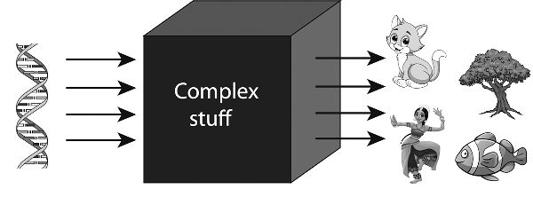
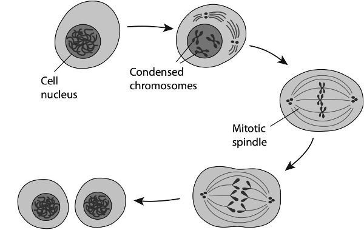
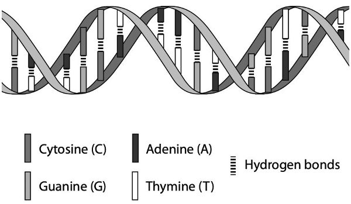
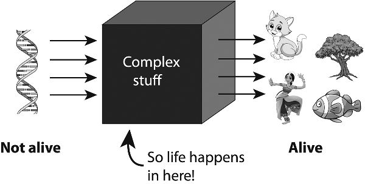
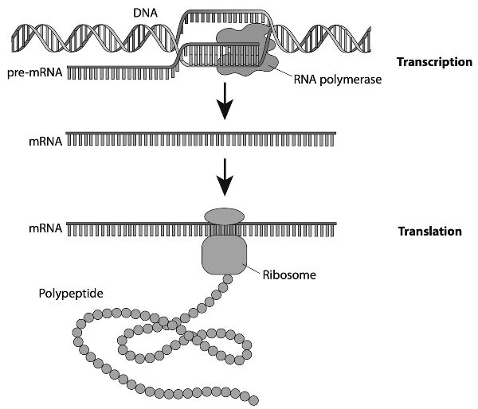
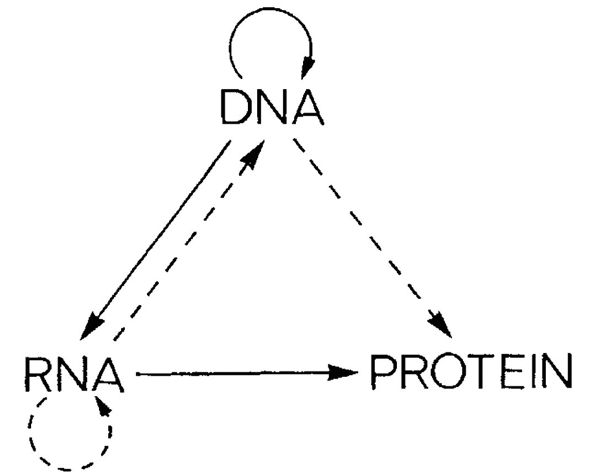
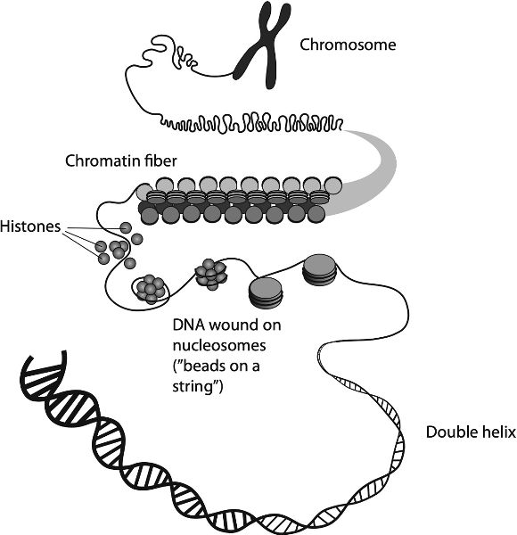
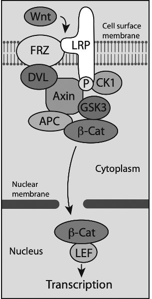

How Life Works · תרגום עברי · Gemini
2 גנים
בספרו מ-1968, "הסליל הכפול" (*The Double Helix*), גולל חתן פרס נובל ג'יימס ווטסון תיאור מסעיר של האופן שבו גילו הוא ופרנסיס קריק את מבנה הסליל הכפול של מולקולת ה-DNA. כשחוללו את פריצת הדרך הזאת ב-1953, ה-DNA עדיין לא הוכר על דעת הכול כחומר שממנו עשויים הגנים שלנו. ווטסון וקריק לא רק הכריעו בוויכוח הזה, אלא גם חשפו את הרמזים החיוניים לשאלה "כיצד ה-DNA פועל": כיצד ביכולתו לקודד מידע ביולוגי, וכיצד הוא מסוגל להשתכפל. בכך הם איחדו את הביוכימיה עם הגנטיקה — שני תחומים שעד אז פעלו במידה רבה בבידוד זה מזה. יש הרואים בגילוי הסליל הכפול של ה-DNA את התגלית המדעית החשובה ביותר של המאה העשרים. לא ברור כיצד אפשר באמת לערוך דירוג בעל משמעות מן הסוג הזה, אך אין ספק שהעבודה הזאת הזניקה את העידן הגנטי.
ספרו של ווטסון גם חולל תמורה באופן שבו כותבים על מדע. הסיפור שלו לא היה דיווח מאופק על מאמץ אינטלקטואלי, אלא גדוּש בפרטים שערורייתיים, ובכלל זה על מעלליו המיניים שלו עצמו. כיום הספר ידוע לשמצה בשל חוסר אמינותו, ובמיוחד בשל התיאור הסקסיסטי, הגס והמתנשא של התרומות המכריעות לפתרון הבעיה שתרמה הביוכימאית הבריטית רוזלינד פרנקלין. ואולם בדיה מוכרת פחות היא טענתו של ווטסון (שרק לאחרונה הודה כי הייתה המצאה גמורה), שלפיה כאשר הוא וקריק הבינו סוף-סוף מה חייב להיות המבנה של מולקולת ה-DNA, שימח קריק את יושבי פאב "העיט" (The Eagle) בקיימברידג', מקום הבילוי החביב על השניים, בהכרזה שהם גילו את "סוד החיים".
החלק הזה של הסיפור סופר שוב ושוב בלי סוף, לרוב כפשוטו. העובדה שהוא התקבל בהתלהבות כה רבה אינה נובעת, להשערתי, רק מכך שמדובר בדימוי חי ומשעשע. שכן הרעיון שלחיים יש "סוד" הוא עתיק יומין. הוא מופיע בתיאור הבדיוני המפורסם ביותר של בריאת חיים, "פרנקנשטיין" של מרי שלי (1818), שבו הסטודנט הצעיר לרפואה ויקטור פרנקנשטיין מעיד כי גילה את "סיבת ההתהוות והחיים", המאפשרת לו "להעניק חיוּת לחומר דומם". הרעיון הזה טבוע בכל השיח הישן על "עיקרון מחייה" או "רוח חיים" השורה בחומר החי ומפיחה בו חיים.
ההנחה שלחיים יש מהות, סוד המבחין בין החי לדומם, היא הנחה מובנת. שכן ההבחנה הזאת אינה הדרגתית כלל ועיקר: דבר אינו נדמה סופי ומוחלט יותר מן המוות. אומנם אנו מדברים על אנשים ש"הוחזרו מן המתים" באמצעות התערבות רפואית, אך יש הבדל בין הליך שעשוי להתניע מחדש לב שנדם בתוך דקות אחדות ובין חיוניותו של גוף של אדם קשיש שנפח את נשמתו האחרונה.
ובכל זאת, בשנים הבאות ייראה הדבר משונה מאין כמותו שאי פעם השתעשענו ברעיון שווטסון ניסה לזרוע באמצעות אותו סיפור בדוי: שהחיים עצמם טבועים איכשהו במולקולת ה-DNA. אם להשתמש באנלוגיה גסה מאוד, זה קצת כמו חוקר ספרות שיכריז כי גילה את "הסוד של דיקנס", רק כדי לשלוף מילון מקוצר ולומר: "הכול נמצא כאן!" השאלה מדוע אנו עדיין משתפים פעולה עם התפיסה הזאת היא שאלה מעניינת להיסטוריונים ולסוציולוגים של המדע — כלומר, היא ודאי חושפת דבר-מה על האופן שבו המדע מעוצב על ידי יחסי הכוח של מעמד, סמכות ושליטה בנרטיב.
העובדה הפשוטה היא שאין שום מקום, שום כוונון של המיקרוסקופ, ובוודאי שום מולקולה, שאליהם נוכל להביט ולהכריז: "הנה החיים!" ה"חיים" אינם מתמצים במלואם בגן, בתא, ואפילו לא באורגניזם, ובוודאי שלא באורגניזם במנותק מן המערכת האקולוגית שלו. תא אנושי יחיד עשוי להיות היחידה הבסיסית של ה"חיוּת" שלנו, אך לא משנה עד כמה נחקור אותו מקרוב, לעולם לא נדע מתוכו על מערכת החיסון או על מערכת העיכול, או על תפקודי הלב והמוח, ובוודאי שלא נזכה לשום תובנה באשר לחוויית הקיום החי. התשובה לשאלה "כיצד החיים פועלים" תלויה ברוחב שדה הראייה שבו בוחרים להתבונן.
הייתי טוען שההסברים שלנו, במיוחד ברמה הפופולרית, נטו להתמקד בשני קני מידה. הראשון הוא המובן מאליו ביותר: מה שעינינו רואות. אנו מוקסמים ומהופנטים בצדק מן ההדר העשיר של עולם הטבע, משפע המינים והצורות שבו, ומן האופן שבו הם חיים ומתים ומתחרים, פועלים ומתקיימים יחד בסביבות כה רבות ושונות על פני כדור הארץ. זוהי גדולתם של החיים כפי שראה אותה צ'ארלס דרווין, שהבחין בה במשוכות שיחים ובשלשולים, בפרושים, באיגואנות, בצמחים מטפסים ובדבורים. התכסיסים שיצורים חיים נוקטים כדי לשרוד ולשגשג הם החומר שממנו עשויים אינספור ספרים וסרטי תעודה.
הרמה השנייה היא רמת הגן: אותן פיסות DNA שנדמה היה — לאחר פריצת הדרך של קריק, ווטסון, פרנקלין, עמיתה האקדמי מוריס וילקינס1 בלונדון (ואחרים) — כי הן מסבירות את "הרעיון המסוכן" של דרווין באופן הרדוקציוניסטי ביותר, כתוצאה של נטיות מולקולריות מסוימות. מתוך שהשלימו את המיזוג בין הגנטיקה המודרנית לדרוויניזם המסורתי, גילוי מבנה ה-DNA וההבנה שנבעה ממנו באשר לאופן שבו מידע גנטי מקודד ומועתק לכאורה בקנה המידה המולקולרי יצרו את הרושם שסיפור החיים הושלם מן המסד עד הטפחות, למעט הפרטים המתווכים שרק מומחים מתעניינים בהם. את תהליך התורשה ואת השינויים האבולוציוניים ההדרגתיים בישויות חיות אפשר היה להסביר באמצעות ההורשה של המידע הטבוע ברצפי היחידות הכימיות המרכיבות את ה-DNA של הגנים ובאמצעות השינויים ההדרגתיים החלים בו. כל שנותר הוא להסביר כיצד האחרון מוביל לראשון: בעגת הביולוגיה האבולוציונית, כיצד גנוטיפ (מכלול הגנים שלנו) הופך לפנוטיפ (מכלול התכונות הנצפות שלנו — גובה, סוג דם, מבנה גוף, נטיות התנהגותיות וכן הלאה).
הסיפור המקובל כאן הוא שה-DNA נושא את התוכנית הגנטית; חלבונים (המקודדים ברצפים של אבני הבניין של הגנים) מוציאים אותה אל הפועל; ובאמצעות שרשרת כלשהי של תגובות הארוזות תחת המושג "פעולת גנים", החומר מתעורר לחיים. כפי שניסח זאת הביולוג פיטר מדאוור, ההתפתחות העוברית מוכרחה להיות "התגוללות של יכולות קיימות מראש, הוצאה אל הפועל של הוראות המקודדות גנטית". כל שנותר לעשות הוא לקרוא את ההוראות הללו. משהתגבשה התמונה הזאת בשנות השישים של המאה העשרים, הדרך אל פרויקט הגנום האנושי (HGP) כבר הייתה סלולה וברורה.
זאת ועוד, כעת נוצר מדרג ברור של חשיבות בשלבים של "פעולת הגנים", שבו המכניקה המפורטת שבאמצעותה גנים הופכים לאורגניזמים הייתה משנית, כמעט חסרת חשיבות. "גישתה של הגנטיקה", אמר הביולוג דייוויד בולטימור ב-1984, "היא לשאול על תוכניות מתאר, לא על מכונות; על החלטות, לא על מכניקה". השקפה חדשה זו של הגנטיקה, לדבריו, "עוזבת את המכונות המגוֹרזות ועולה אל קומת ההנהלה, ושם היא מנתחת את המתכנן, את מקבלי ההחלטות, את המחשבים". הסיפור השגור כיום הוא שאותם פרטים "מגוֹרזים" הם אומנם מסובכים להפליא, אך מיותרים להבנה כללית של האופן שבו גנים מולידים חיים (איור 2.1).

איור 2.1 התפיסה הפופולרית של האופן שבו גנים יוצרים יצורים חיים. כפי שמנסח זאת פילוסוף הביולוגיה דניאל ניקולסון (2014), "[המטפורה של] התוכנית הגנטית אינה מסבירה את ההתפתחות, היא רק סוגרת אותה בקופסה שחורה".
אלא שאז, כפי שמנסחת זאת היסטוריונית המדע אוולין פוקס קלר, "קרה דבר משעשע בדרך אל הגביע הקדוש. אותה התקדמות יוצאת דופן [לקראת הבנת החיים] נעשתה פחות ופחות ניתנת לתיאור במסגרת השיח שטיפח אותה". נכנסנו אל קומת ההנהלה ומצאנו בה אנדרלמוסיה מבלבלת, שהמידע בה פזור לכל עבר בלא שום תוכנית נראית לעין, ובלי שאיש נראה מוכן או מסוגל לקבל החלטות כלשהן. החיים אינם, בסופו של דבר, קופסה שחורה שבקצהָ האחד גנים ובקצהָ האחר אורגניזמים ומערכות אקולוגיות. שכן הגנים אינם מה שחשבנו.
החיים כפי שהם נדמו
באופן משונה, התפיסה הפופולרית של הגנים שהפכה למשא על כתפינו מהדהדת את הכשל הטמון ב"טיעון מן התכנון" הקלאסי של התיאולוגיה הטבעית במאה התשע-עשרה. זו האחרונה טענה כי צורות ותפקודים מופלאים ומורכבים כאלה שאנו מוצאים בטבע, ואולי בגוף האדם בפרט, אינם יכולים אלא לחייב בורא תבוני. לא ייתכן בשום אופן שהם נוצרו ביד המקרה העיוור. אולם הברירה הטבעית הראתה כיצד, להפך, הם בהחלט יכלו להיווצר כך.
ואולם אז גויס אותו תהליך דרוויניסטי עצמו כמקור לתוכנית שתוכל להחליף את מעשה ידיו של אלוהים. שכן האומנם ייתכן שגוף מורכב ואמין כשלנו ייווצר בלא שתהיה בנמצא תוכנית מתאר קיימת מראש בעבורו? ולכאורה, רק הגנים יכלו לקודד תוכנית כזאת, שכן הם היו (לפי התפיסה המקובלת) כל מה שגופנו מתחיל ממנו.
עם זאת, תמונה עתיקת יומין ומכובדת זו של האופן שבו החיים פועלים אינה מזנקת היישר מן הגנים אל הסוג הטקסונומי, אם לומר זאת כך. אנו אכן משרטטים לעיתים כמה שלבי ביניים. שיעורי הביולוגיה של בתי בבית הספר הזכירו לי מה מלמדים אותנו בדרך כלל על האופן שבו החיים פועלים; הסיפור מתנהל בערך כך:
- גנים הם פיסות DNA בכרומוזומים שלנו המקודדות מולקולות הנקראות חלבונים. מכלול הגנים האישיים שלנו מרכיב את הגנום שלנו.
- אנו יורשים תוכנית מתאר לעצמנו מהורינו הביולוגיים: היא תערובת מעורבלת של שני הגנומים שלהם.
- ספר ההוראות הזה של ה-DNA נקרא בתהליכים הנקראים שעתוק ותרגום. בשעתוק, המידע המצוי בגן מועתק אל גדיל של RNA, בעל מבנה כימי דומה מאוד לזה של DNA. גדיל ה-RNA הזה משמש לאחר מכן כתבנית לייצור חלבון.
- רוב החלבונים הם אנזימים, והם מתזמרים ומזרזים את התהליכים הכימיים שבאמצעותם תאים מקיימים חילוף חומרים, גדלים ומתחלקים.
- פעולותיהם המדויקות להפליא של החלבונים מאפשרות את בנייתם ותחזוקתם של תאים, המרכיבים הבסיסיים ביותר של מערכות חיות באמת.
- התאים שלנו מתוכנתים על ידי גנים להתארגן לרקמות ולאיברים.
- תאים ורקמות ממשיכים לעשות את שלהם עד שהם נשחקים, ואנו מתים. אך לא לפני שאנו (אם התברכנו בכך) מעבירים הלאה את הגנים שלנו לצאצאים באמצעות תאי המין.
- וכך זה נמשך והולך.
בהתחשב באילוצים של תוכנית הלימודים בבית הספר, אין כאן בשום אופן סילוף נורא של האמת (כפי שהיא מוכרת לנו כיום). אם ברצונכם לעבור את בחינות הבגרות בביולוגיה, או לקבל מושג כלשהו על מרכיביהן הבסיסיים של מערכות חיות, התפיסה הישנה הזאת בהחלט תספיק. חלבונים אכן מקודדים במובן מסוים במקטעים של ה-DNA שלנו, והם אכן מאפשרים ומתאמים חלק ניכר מהפעילות המולקולרית בתוך התאים. ותאים אכן מתארגנים מעצמם לרקמות ולאיברים. לכל חלק בסיפור הזה יש הצדקה מסוימת.
הבעיות האמיתיות נעוצות בסיפור המסגרת. לא די לומר שהסיפור המלא "קצת יותר מורכב מזה". לא: השינוי אינו (רק) בפרטים, אלא בתמונה הגדולה. לכן בעיניי מטריד שהסיפור שלעיל כמעט לא השתנה בחמישים השנים האחרונות לערך, שכן המדע עצמו השתנה לבלי הכר באותו פרק זמן.
אני חושד שחלק ניכר מהסיבה לכך שהסיפור לא השתנה אינו נעוץ באיזו אג'נדה נסתרת של אנשי חינוך, אלא בכך שאיננו יודעים כיצד לשפר אותו (לא להחליף אותו!). וכנראה לעולם לא יגיע רגע יחיד ומיוחד שבו נוכל לעצור ולומר: "אהה, הגיע הזמן לשנות את התמונה הגדולה!" היסטוריון המדע תומאס קון טען כידוע שהמדע מתקדם לעיתים קרובות בסדרה של מהפכות או "חילופי פרדיגמות", שבהם מסגרת ההסבר כולה משתנה ומדענים מתחילים לדבר במונחים חדשים לחלוטין: המעבר, למשל, מהיקום הגאוצנטרי של אריסטו ליקום ההליוצנטרי של קופרניקוס.2 אם אכן כך הדבר, אינני סבור שאנו מצויים ברגע כזה בביולוגיה. ייתכן שהביולוגיה מעולם לא חוותה חילוף פרדיגמה כזה. ביולוגים רבים אולי ירצו לטעון שתורת האבולוציה של דרווין הייתה מהפכה שכזאת, אך זהו למעשה רק טיעון אלגנטי בדיעבד, שממלא תפקיד רטורי משל עצמו. התיאוריה של דרווין הייתה שנויה במחלוקת בראשיתה, לא כל כך מבחינה תיאולוגית אלא מבחינה מדעית – ועד שלהי המאה התשע-עשרה היא נראתה כמעט גוועת. היא ניצלה בזכות התיאוריה המתמטית של גנטיקת האוכלוסיות, אך גם כיום ממשיכים לשכלל, להתאים, להרחיב אותה ולהתווכח עליה (שלא לדבר על השימוש המסולף שנעשה בה).
במקום מהפכה מחשבתית כלשהי, אני רואה את התפתחותה של נקודת המבט בביולוגיה המודרנית כמבט מתוך סירה הנסחפת בזרם. קו החוף משתנה רק לאיטו, אולי באופן בלתי מורגש, עד שיום אחד מביטים החוצה ומבינים שהגענו למקום שונה בתכלית ושום דבר כבר אינו מוכר. אני מעז לומר שמדע מורכב כמו הביולוגיה יידרש לכייל מחדש את הסיפור שלו מדי כמה עשורים. להערכתי, כיול מחדש כזה כבר התמהמה זמן רב מדי.
אבל האם בכלל משנה שמציגים לנו תפיסה מיושנת של האופן שבו החיים פועלים? לדעתי כן. שום חברה אינה יכולה לגבש שיקול דעת מושכל בשאלה אם לאמץ טכנולוגיות רפואיות חדשות או כיצד לפקח עליהן, אם תפיסתה לגבי אופן פעולתן פשטנית ומעוותת מדי. בפרט, ככל שהגנטיקה תופסת מקום מרכזי יותר ויותר בחיינו בעידן של עריכת גנום, שיבוט וסקר גנטי של בני אדם ועוברים, עלינו לדעת מהם גנים באמת – ומה אינם.
אין זה רק עניין של הבנת הציבור. הדבר משפיע על החלטות המתקבלות בתחומי המדיניות והבריאות, שלא לדבר על אמון הציבור במדע. ותפיסות שגויות לגבי גנים מעכבות גם את התקדמות המדע עצמו – ישנם ביולוגים, למשל, שאינם מודעים כלל לעד כמה עמוק ההבדל שבו אפילו עמיתיהם מתתי-תחומים אחרים במקצועם חושבים על גנים. המדע משגשג על מחלוקות, אך הללו מועילות רק אם הצדדים המעורבים דוברים אותה שפה ואם הם, גם אם לא בדיוק באותו עמוד, לפחות קוראים אותו ספר.
אם התיאור שלעיל לגבי האופן שבו החיים פועלים נראה לכם משביע רצון, אני מקווה שלא תיפגעו מההקבלה הבאה. שכן בעיניי התיאור הזה דומה מעט לניסיון להסביר כיצד נכתבות יצירות מופת ספרותיות במונחים הבאים:
• מילים הן פיסות מידע המקודדות משמעויות. • יחסי הגומלין העדינים בין מילים עשירות-משמעות מולידים דברים הנקראים משפטים, הישויות הספרותיות הבסיסיות ביותר. (יש ויכוח מסוים בשאלה מה נדרש כדי להיחשב למשפט, אבל לא משנה.) • משפטים מורכבים יחדיו, על פי תוכנית האב של המחבר, לעמודים ולפרקים, שהם בתורם מרכיביהם של ספרים.
זהו תיאור מקיף למדי, הלא כן? כלומר, הכל מלבד כל רמז לשאלה איך זה קורה בפועל. את הסיפור הזה אפשר היה לבטא כך:
מילים (+ קסם←) ← משפטים (+ קסם) ← פרקים וספרים
והנה התיאור המקביל של האופן שבו החיים פועלים:
חלק גדול מהספר הזה עוסק בחלקים של הקסם – שאינם קסומים כלל, כמובן, אלא מעניינים ונפלאים הרבה יותר מזה. אך הוא עוסק גם בשאלה אם הרצף הזה כולו הוא הדרך הנכונה להביט בבעיה, כשמציבים את הגנים בהתחלה ואת הרקמות והגופים בסוף. (ארגנתי את הפרקים שלי בסדר הזה מטעמי רציפות, לא מטעמי קדימות. במדריך ההפעלה של החיים, גנים הם פרק חשוב, אך לא יותר מכך.)
כשאני אומר "מעניינים ונפלאים", אני מודה שלעיתים קרובות כוונתי גם ל"מורכבים", אפילו עד כדי סחרחורת. יש סיבות טובות לכך שמרבית התיאורים הפופולריים מסיטים את מבטם מהסתעפויותיה הבארוקיות של הביולוגיה המולקולרית. אולם הסיבה העיקרית לכך היא שהחוקרים עצמם עמדו מולה נבוכים. אפילו בעיניהם, מורכבותם של תהליכים תאיים נראית לעיתים קרובות מוגזמת: אנו יכולים לצפות בלהטוט הקסמים מתבצע, ולדעת שיש לו הסבר רציונלי ולא-קסום, אך איננו מצליחים בשום פנים ואופן לראות מהו ההסבר הזה. לא פעם נדמה לנו שאנו מתקדמים לאנשהו, רק כדי לראות את ההשערה שלנו קורסת אל מול ניסוי חדש.
רק כעת – כלומר, בעשור או בשניים האחרונים – התחלנו להצליח יותר: לא רק ביכולת לספר סיפור חדש, אלא גם לקבל הצצה אל מה שמעניק לו לכידות. כשמנסחים זאת כך, אולי לא תופתעו לגמרי לשמוע שחלק מהקושי נבע מכך שהסתכלנו על הבעיה בצורה הלא נכונה. כשם שמעולם לא היה נכון שאפשר להעמיד או לפרק את ה"הסבר" של ספר, או אפילו של משפט, להסברים של המילים הבודדות, כך גם באשר לאופן שבו החיים פועלים. כל רמה בתהליך אינה מוגדרת במלואה על ידי הרמה שקודמת לה ואינה טבועה בה לחלוטין. במילים אחרות, מה שמצוי באותו "קסם" הוא דבר-מה נוסף שהמערכת זקוקה לו: תוספת של מידע, הקשר וכוח סיבתי. יצורים חיים אינם, בסופו של דבר, פלט דטרמיניסטי – מורכב ככל שיהיה – של גנים. במילותיו של מישל מוראנז', "תהליכים ביולוגיים מבוקרים גנטית, אך אין פירוש הדבר שתוצרי הגנים אחראים כשלעצמם לתהליכים הללו. הם פשוט רכיבים המשתתפים בתהליכים הללו."
גנטיזציה
אם תפקיד זה נשמע לכם צנוע להפליא לעומת האופן שבו גנים מוצגים בדרך כלל, אינכם לבד. "בשלהי המאה העשרים," כתבו הביולוגים מארק קירשנר, ג'ון גרהארט וטים מיצ'יסון בשנת 2000, "הגנטיקה מושלת בכיפה כנושא המרכזי במחשבה הביולוגית." בשיח הפופולרי, הגנים הם מעין תמצית של ההוויה: הם הופכים אותנו למה שאנחנו. "זה בגנים שלי," אנחנו אוהבים לומר — או לחלופין, "זה ב-DNA שלי." מה נמצא שם? כמעט הכול, אם להאמין לחלק מהדיווחים בתקשורת. באמצע שנות התשעים של המאה העשרים ציינו הסוציולוגית דורותי נלקין וההיסטוריונית סוזן לינדי כי הועלו טענות לקיומם של "גנים של אלימות, גנים של ידוענות, גנים של הומוסקסואליות, גנים של בטלנות כרונית... ואפילו גנים של חטא." ה-DNA, הן אמרו, "הפך לאייקון תרבותי, לסמל, כמעט לכוח מאגי" — לא פחות מאשר "המקבילה החילונית של הנשמה הנוצרית."
בהינתן שכל זה אינו אלא תפיסה מוטעית — אין גנים לאף אחת מן התכונות הללו, והגנים אינם מה שהופך אותנו למי שאנחנו (אף שהם תורמים לכך) — עלינו לשאול מדוע יוחסה להם כל-יכולת שכזו. התשובה מורכבת. נלקין ולינדי הציעו כי מושג הגן מילא באופן חלקי חלל שנפער בעקבות שינויים חברתיים. אנו מצויים, לדבריהן, "בעידן שבו הזהות האישית, הקשרים המשפחתיים והלכידות החברתית נראים מאוימים, והאמנה החברתית נראית מפוררת." שמא נאחזה החברה ברעיון מדעי שנדמה כי הוא מציע נחמה בשעה שהמשענת המסורתית של האמונה הדתית התנוונה? הגן, אומר מוראנז', "הפך למשהו שעליו מושלכים הפחדים והפנטזיות שלנו."
בשנת 1991, בדיוק כשפרויקט הגנום האנושי (HGP) יצא לדרך, כינתה האפידמיולוגית אבי ליפמן את הנטייה הזו בשם "גנטיזציה" (geneticization). כפי שניסחה זאת, זהו "תהליך מתמשך שבו הבדלים בין פרטים מועמדים על צופני ה-DNA שלהם", ובסופו של דבר "הביולוגיה האנושית מזוהה בטעות עם הגנטיקה האנושית, ומשתמע מכך שזו האחרונה פועלת לבדה כדי להפוך כל אחד ואחת מאיתנו לאורגניזם שהוא או היא."3 האם נטייה זו הייתה פשוט ניכוס תרבותי מוטעה של המדע, או שמא מדענים תרמו לה ושיתפו עמה פעולה? אין כל ספק שידם הייתה בדבר. "גורלנו," אמר ג'יימס ווטסון, "טמון בגנים שלנו." (ספוילר: הוא לא.) "אנו יודעים," מספר לנו ספר הלימוד הקנוני *Molecular Biology of the Gene* ("הביולוגיה המולקולרית של הגן"), שנכתב בידי ווטסון ואחרים, כי "ההוראות להתפתחות הביצית כתובות ברצף הליניארי של הבסיסים לאורך ה-DNA של תאי הנבט." (ספוילר: הן לא.)
נלקין ולינדי מספרות כיצד הגנטיקאי וולטר גילברט נהג לפתוח הרצאות לציבור הרחב בשליפת תקליטור מכיסו, גדוש במידע על רצפים גנטיים, ולומר לקהל: "זה אתם." (ספוילר: זה לא.) וזה עדיין נמשך. אתר האינטרנט של המכון הלאומי לחקר הגנום האנושי בארצות הברית, המפקח על פרויקט הגנום האנושי (HGP), טוען כי הגנום האנושי הוא "תוכנית המתאר הגנטית השלמה של הטבע לבניית אדם." (ניחשתם נכון: שוב לא נכון.) הגנטיקאי ההתנהגותי רוברט פלומין קרא לספרו על גנים משנת 2018 בשם *Blueprint* ("תוכנית מתאר"), וטען בו כי הגנים הם "הכוח השיטתי המרכזי בחיים." ה-DNA, הוא אומר, "אינו הדבר היחיד שקובע [בהפיכתכם למי שאתם], אבל הוא קובע יותר מכל שאר הדברים גם יחד." (טוב, הבנתם את הפרינציפ.)
אלה שאומרים את הדברים הללו מאמינים בהם (לדעתי) באמת ובתמים, ולכן מעניין לתהות מדוע. כפי שמזכירות לנו נלקין ולינדי, "כל מפה היא דרכו של מישהו לגרום לכם להביט בעולם בדרכו או בדרכה." כשם שיש פיזיקאים שיאמרו לכם כי כל מה שקורה ניתן להסבר בסופו של דבר באמצעות הפיזיקה לבדה (הוא לא), וכימאים שיאמרו לכם כי בסופו של חשבון ביולוגיה אינה אלא כימיה (היא לא), כך גם הגנטיקאים, בעומדם על הבכורה של הגן, מכוננים מדרג אינטלקטואלי כשהם מייחסים לגנים יותר מכפי שראוי. כדאי להזכיר כאן שמדענים רבים בראשית המאה העשרים היו משוכנעים שהאאוגניקה היא מסקנה הכרחית ומדעית למהדרין של תורת האבולוציה של דרווין. היא לא הייתה כזו; אך הם האמינו בכך משום שהיא הצדיקה את השקפתם על האופן שבו פועל העולם, עם המדרגים "הטבעיים" שלו באשר לערך האדם. הרעיון שה-DNA הופך אתכם למה שאתם אינו הרסני כשלעצמו כמו האאוגניקה, אך אם לא נזהרים, המרחק ביניהם כחוט השערה, והוא שגוי באותה מידה.
מה שמסקרן הוא שלא ביולוגים באופן כללי הם שיאמרו לכם את הדברים הללו. רבים מאלה העובדים בתחומים שבהם גנים אינם מוקד העניין המרכזי — למשל בביולוגיה התפתחותית, הבוחנת כיצד אורגניזמים גדלים, או בביולוגיה התנהגותית, או בזואולוגיה, או אפילו, בקצה השני של המיקרוסקופ, בביולוגיה המבנית של חלבונים — כלל אינם מייחסים בכורה שכזו לגנים. דרכם להביט בעולם אינה זקוקה לנרטיב כזה. מוזר אפוא שנדמה כי קנינו בשקיקה כה רבה את התמונה שצייר ווטסון, שלפיה ה-DNA שלנו הוא "מה שהופך אותנו לאנושיים." הסיבות לכך מורכבות, אם כי נדמה לי שהן קשורות לכמיהה לנרטיב פשוט ולמשכן חדש עבור "המהות" או הנשמה שלנו.
הולדת הגן
אני חושד גם שהגנים רכשו את יוקרתם מעצם רתימתם לאותו נרטיב גדול אחר של עולם החי: האבולוציה הדרוויניסטית. שני הרעיונות ניצבים בלב מושג התורשה, שבמסגרתו תכונות עוברות מהורה לצאצא.
צ'ארלס דרווין עצמו הציע שהורשת תכונות מתרחשת בתהליך שהוא כינה פנגנזה (pangenesis), שבו תאים בגוף משילים חלקיקים זעירים, גֶמוּלוֹת (gemmules), הנושאים מידע השולט בהתפתחות ומכוון אותה. הוא שיער שהגמולות מצטברות באיברי הרבייה ומועברות לצאצאים. ואולם תיאוריית הפנגנזה של דרווין אינה דומה למעשה לרעיון של גנים המקודדים בכרומוזומים, משתכפלים ומועברים מדור לדור, שכן דרווין האמין שהגמולות עשויות להשתנות בעקבות יחסי גומלין עם סביבתו של האורגניזם בטרם יועברו הלאה דרך תאי המין. לפיכך, הפנגנזה עשויה לאפשר הורשה של תכונות שנרכשו במהלך חייו של ההורה — אותו סוג של אבולוציה שהציע בראשית המאה התשע-עשרה הזואולוג הצרפתי ז'אן-בטיסט למארק.
ב-1889 שינה הבוטנאי ההולנדי הוגו דה פריס את רעיון הפנגנזה כשהציע שכל תכונה מוטבעת על ידי חלקיק נפרד, שלו העניק את השם החדש "פנגן" (pangene). הוא והביולוג האבולוציוני הגרמני אוגוסט וייסמן הציעו שהחומר התורשתי, יהא אשר יהא, נישא במה שמכונה תאי הנבט: ביציות ותאי זרע. ב-1892 הציע וייסמן שקיים מחסום נוקשה המונע כל העברה מתאי הגוף (התאים הסומטיים) אל תאי הנבט. לפיכך, שום שינוי גנטי המתרחש בתאים סומטיים אינו יכול לעבור בתורשה; הלמארקיזם הוא בלתי אפשרי. מידע יכול לנוע רק בכיוון ההפוך, מתאי הנבט אל התאים הסומטיים. ב-1909 קיצר הביולוג הדני וילהלם יוהנסן את המונח של דה פריס ל"גנים"; הביולוג האנגלי ויליאם בייטסון כבר טבע את המונח "גנטיקה" שלוש שנים קודם לכן.
בשנות השישים של המאה התשע-עשרה, בשעה שדרווין פיתח את תיאוריית הפנגנזה שלו, ערך נזיר מוראבי בשם גרגור מנדל ניסויי הכלאה בצמחים בברנו, השוכנת כיום ברפובליקה הצ'כית — ניסויים שבהמשך ייתלו בהם כדי להבהיר מהם אותם פנגנים. מנדל בחן כיצד תכונותיה של אפונת הגינה — צבעה (צהוב או ירוק) והמרקם שלה (חלק או מקומט)4 — תלויות במוצא ההורי שלה. צמחי אפונה מתרבים ב"זיווג טהור": הם מאביקים את עצמם ומעמידים צאצאים הנראים כמו צמח האם. מנדל הכליא צמחים שונים זה עם זה כדי לראות אילו תכונות יתקבלו. הוא מצא שאפשר להסביר את התוצאות אם מניחים שהצמחים יורשים תכונות באופן בדיד, כשהן מועברות בשלמותן ובלא ערבוב. תכונתו של אחד ההורים גוברת, והיחסים המספריים בין התוצאות העידו בעיני מנדל שהתכונות מתחלקות לשני סוגים: דומיננטיות, שבהן הורשת התכונה מאחד ההורים בלבד תגרום לה לבוא לידי ביטוי בצאצא, ורצסיביות, שבהן התכונה תופיע רק אם תתקבל בתורשה משני ההורים גם יחד.
שימו לב שכל זה נוסח במונחים של התכונות עצמן. נהוג לומר שמנדל ייחס את התכונות הללו ל"גורמים" חומריים כלשהם העוברים מדור לדור, כמבשרים של מושג הגנים שלנו. ואולם הוא לא הציע שום מנגנון עומק המסביר את היחסים שבהם התכונות עוברות בתורשה, מעבר לרעיון של תכונות דומיננטיות ורצסיביות. המסר המרכזי של עבודתו היה דווקא שהתכונות עוברות בתורשה ללא שינוי וללא ערבוב.
חלק אחר מן האגדה שנרקמה סביב מנדל מספר שעותק של החיבור שפרסם ב-1865, "ניסויים בהכלאת צמחים" (*Experiments on Plant Hybridization*), שכב מבלי שאיש קרא בו בספרייתו של צ'ארלס דרווין בבית דאון שבסאסקס. אילו טרח דרווין לקרוא אותו (שואל הסיפור), שמא היה מבין שמנדל גילה לכאורה ראיות לתיאוריית הפנגנזה שלו? אלא שגם אילו החזיק דרווין בעותק של ספרו של מנדל — ולמעשה כלל לא ברור שכך היה — רחוק מלהיות מובן מאליו שהוא היה מייחס לו רלוונטיות רבה לתיאוריה האבולוציונית שלו. מנדל, אחרי ככלות הכול, לא עסק באבולוציה כלל, אלא בטיפוח צמחים ובהכלאות. הפיתוי לסדר ולערוך אירועים מן העבר כך שיתאימו לסיפור מסודר ונקי מעיב על כל מאמץ להבין את ההיסטוריה, אך אולי בשום מקום אין הוא חזק יותר מאשר בהיסטוריה של המדע, שבה הדחף לטוות סיפורי קדושים מיתולוגיים על "אנשים דגולים" חזק להכעיס.
באותו אופן, אף שלעיתים קרובות מספרים לנו שתוצאותיו של מנדל זכו להתעלמות עד סוף המאה, הרי שבמידה שיש בכך אמת כלשהי, לא היה זה משום שאיש לא הבין את חשיבותן (או אפילו ידע עליהן), אלא משום שזיקתן לתיאוריה האבולוציונית לא הייתה ברורה אז כפי שהיא נדמית כיום. מכל מקום, העבודה לא "נשכחה" עד ש"התגלתה מחדש" בידי דה פריס ואחרים — אלא שפשוט המדענים המאוחרים הללו עמדו על הרלוונטיות שלה לתפיסתם באשר למהותם של הגנים ולפעולתם. קודם לכן נתפסו תוצאותיו של מנדל בדרך כלל כתמיכה באמונה הרווחת שלפיה צאצאים של בני כלאיים נוטים לחזור לתכונותיו של אחד ההורים במקום למזג ביניהן. לפיכך, אין זה מדויק לומר שהרלוונטיות שלהן לגנטיקה ולתורשה בכלל הוכרה רק בראשית המאה העשרים; נכון יותר לומר שרק אז הרלוונטיות הזאת נוצרה.
כאשר מפרשים אותן במונחים מודרניים, מתצפיותיו של מנדל על דפוסי התורשה משתמע שהגנים הקובעים תכונות מופיעים בגרסאות שונות, הנקראות אללים (alleles). עבור כל גן, אתם מקבלים אלל אחד מאביכם ואלל אחד מאימכם. (לכל אחד מהם יש שניים, והשאלה איזה מהם תקבלו נקבעת באקראי.) האלל האימהי והאלל האבהי עשויים להיות זהים או שונים; אם הם שונים, כל אחד מהם עשוי להוביל לגרסה אחרת של התכונה הרלוונטית. לדוגמה, ייתכן שיש אלל של גן המשפיע על צבע העיניים שמוביל בדרך כלל לעיניים חומות, ואלל אחר של אותו גן שמייצר בדרך כלל עיניים כחולות. בקירוב ראשון, לכל בני האדם יש אותו מערך של גנים בגנום שלהם, אך כמעט לכל אחד מאיתנו יש מערך שונה של אללים, וזו הסיבה לכך שכולנו נבדלים זה מזה בתכונות המושפעות מגנים. לאנשים מסוימים יש אללים הקשורים לקומה גבוהה או נמוכה יותר, לגוני עור ולצבעי עיניים שונים, וכן לתכונות התנהגותיות שונות.
אפשר היה גם להסיק מניסוייו של מנדל באפונה שכל תכונה של אורגניזם מקודדת בגן יחיד, ומועברת בתורשה באופן בדיד: היא נעשית כזאת או אחרת. לעיתים נאמר שממצאיו הוזנחו משום שמרבית החוקרים האמינו "בטעות" שתכונות דווקא מתמזגות כשהן עוברות בתורשה מן ההורים. אבל כמובן, לעיתים קרובות זהו אכן המצב, למשל בפיגמנטציה של העור או בגובה. יש תכונות שאכן נדמות כעוברות בתורשה באופן בדיד — צבע העיניים וצבע השיער מצוטטים לעיתים קרובות כדוגמאות אופייניות, אף שהאמת מורכבת יותר — בעוד שאחרות נראות כמשתנות באופן רציף. תכונות העוברות בתורשה על פי חוקי מנדל5 מכונות "מנדליות", אך הן היוצא מן הכלל ולא הכלל.6 וגם כאשר תכונה מצייתת לגנטיקה המנדלית של התורשה, אין פירוש הדבר שהפנוטיפ המקביל יעשה זאת. מסיבות אלה טוענים חוקרים אחדים שהוראת הגנטיקה בבית הספר על פי עקרונות מנדליים, הגם שהיא קלה יחסית להבנה, משרישה מלכתחילה תפיסה מוטעית באשר לאופן פעולתם של גנים.
משנות העשרה של המאה העשרים פיתחו המדענים הבריטים רונלד פישר וג'יי-בי-אס הלדיין ואחרים מודלים מתמטיים של האופן שבו אללים שונים מתפשטים באוכלוסייה תחת השפעתה של הברירה הטבעית הדרוויניסטית, המעדיפה אללים הקשורים לתכונות המעניקות לפרטים יתרון הסתגלותי. באמצעות חשיבה סטטיסטית, שפישר היה מחלוציה, הצליחו המודלים הללו להתמודד עם תכונות המושפעות מיותר מגן אחד, שחלקן עשויות להתבטא כהבדלים הדרגתיים ולאו דווקא בדידים. עבודה זו יישבה בין ההורשה הבדידה של תכונות, שהתחייבה לכאורה מתוצאותיו של מנדל, ובין המיזוג שהשתמע לכאורה מן התיאוריה של דרווין.
אבל מה היו אותם חלקיקי גנים? ב-1919 הציע הביולוג האמריקאי תומאס האנט מורגן כי ייתכן שהם "מולקולה כימית". ואולם אפילו ב-1933, כשמורגן זכה בפרס נובל על עבודתו בתחום הגנטיקה והתורשה של זבובי פירות, הוא הודה שאין תמימות דעים בנושא, ושייתכן שהגנים אינם אלא ישויות בדויות לחלוטין — מועילות לצורכי חשיבה, אך לא כאלה שיש לזהותן כעצמים פיזיים. (אם הדבר נשמע מפתיע, זכרו שעד לניסוייו של הפיזיקאי הצרפתי ז'אן פרן ב-1908, מדענים אפילו לא היו בטוחים שאטומים הם דברים ממשיים.)
אלא שבשלב ההוא כבר הלכו והצטברו הראיות לכך שגנים הם אכן ישויות חומריות, וככל הנראה בעלות ממדים מולקולריים. ב-1935 הראה תלמידו של מורגן, הרמן מולר, שקרני רנטגן — שהיה ידוע כי הן מסוגלות ליינן אטומים ומולקולות (כלומר לתלוש מהם אלקטרונים ולהעניק להם מטען חשמלי) — יכולות לחולל מוטציות בזבובים, ומכך השתמע שמוטציה גנטית נגרמת משינוי פיזי כלשהו בחומר נושא גנים. ב-1935 פרסם שותפו לפרקים של מולר בברלין, הגנטיקאי הרוסי ניקולאי טימופייף-רסובסקי, מאמר משותף עם הפיזיקאים הגרמנים קרל צימר ומקס דלבריק, שבו הסיקו ממחקרי מוטציות כאלה בקרני רנטגן שהגנים הם מולקולות מסוג כלשהו, ושמוטציות בהן חייבות לשקף שינוי באופן שבו האטומים מסודרים. שמא הם, תהו החוקרים, פולימר מסוג כלשהו — מחרוזת של יחידות כימיות החוזרות על עצמן?
עד אז כבר היה מועמד חזק לתפקיד המרכיב החומרי של הגנים. בין המבנים שהתגלו בתוך תאים במחקרי מיקרוסקופ בשלהי המאה התשע-עשרה היו עצמים זעירים שספחו צבענים ונעשו גלויים יותר לעין, ומסיבה זו כונו כרומוזומים ("גופיפים צבועים"). לפני שתא התחלק, הכרומוזומים היו מתעבים לחלקיקים קטנים ומוגדרים היטב, לרוב בעלי צורת X, ומועתקים כך שכל אחד מהם הוכפל. לאחר מכן היו העותקים הללו נפרדים זה מזה, כך שעותק אחד מכל כרומוזום מצא את דרכו אל כל אחד משני התאים החדשים. ב-1902 הציע הגנטיקאי וולטר סאטון כי לפיכך ייתכן שהכרומוזומים הם משכנם של הגנים. הביולוג הגרמני תאודור בוברי העלה אותה הצעה עצמה בערך באותו זמן, לאחר שהבחין כי עוברים של קיפודי ים מתפתחים כראוי רק אם יש להם את כל הכרומוזומים שלהם.
כל אחד מן התאים הסומטיים שלנו7 מכיל ארבעים ושישה כרומוזומים: שני עותקים מכל אחד מעשרים ושלושה סוגים שונים. (לבעלי חיים אחרים יש מספרים אחרים: לחתולים יש תשעה-עשר זוגות, ולכלבים שלושים ותשעה זוגות.) הגמטות (ביציות ותאי זרע) מיוחדות בכך שכל אחת מהן מכילה רק מערך אחד של כרומוזומים. עובדה זו הופכת אותן לתאים הפלואידיים, בניגוד לתאים הסומטיים הדיפלואידיים.

איור 2.2 הכרומוזומים מתעבים לצורות X לפני שהם מופרדים על גבי פיגום החלבון הסיבי הקרוי כישור החלוקה במהלך חלוקת התא (מיטוזה).
כאשר תאים מתחלקים בתהליך הנקרא מיטוזה – כפי שהם עושים כשאורגניזם גדל מעובר, ולמעשה ממשיכים לעשות מדי יום בגופנו כשתאים מוחלפים – המערך השלם של ארבעים ושישה הכרומוזומים משוכפל, ומערך שלם אחד של זוגות עובר לכל אחד מתאי הבת. קיים מנגנון ביולוגי מורכב ומתוחכם להפליא, הכולל צרורות של סיבי חלבון המתארגנים מעצמם, שמנצח על התהליך הזה ומבטיח שהכרומוזומים יחולקו כהלכה (איור 2.2).
אבל מהם בעצם כרומוזומים? אנליזה כימית גילתה שהם עשויים בחלקם מחלבון: החומר שנדמה היה כי הוא מצוי בכל מקום ביצורים חיים, ושכבר היה ידוע כי ממנו עשויים האנזימים המזרזים תגובות מטבוליות. חלבון מסוג כלשהו נראה מועמד טבעי לשמש כחומר התורשתי. אולם הכרומוזומים הכילו גם מולקולה נוספת, שכונתה במקור "נוקלאין" ובהמשך סווגה כחומצת גרעין: ליתר דיוק, חומצה דאוקסיריבונוקלאית, או DNA. זהו פולימר הבנוי מארבעה סוגים של יחידות כימיות (נוקלאוטידים), המכילות מולקולת סוכר (דאוקסיריבוז), קבוצת פוספט, וחומר השייך למחלקה הכללית של מולקולות הקרויות בסיסים. ארבעת הנוקלאוטידים נבדלים זה מזה בבסיסים השונים שלהם: אדנין (A), ציטוזין (C), גואנין (G) ותימין (T). שמא, תהו כמה חוקרים, ה-DNA אינו אלא מעין פיגום או תשתית תומכת לחלבונים נושאי הגנים שבכרומוזומים?
בשנת 1943 גילה המיקרוסקופאי האמריקאי אוסוולד אייברי כי ההפך הוא הנכון, ככל הנראה. הוא ועמיתו הצעיר מקלין מקארטי, שעבדו בבית החולים של מכון רוקפלר בניו יורק, הצליחו למצות ולבודד חומר שכינו "הגורם המתמיר" (transforming principle), אשר היה מסוגל להפוך זן לא מזיק של חיידקי פנאומוקוק לזן אלים, והם מצאו שהוא מורכב מ-DNA טהור כמעט לחלוטין. מסקנתם שה-DNA הוא החומר התורשתי נתמכה בראשית שנות ה-50 במחקריהם של אלפרד הרשי ומרתה צ'ייס במעבדת קולד ספרינג הרבור בלונג איילנד, שנראו כמצביעים על כך (גם אם לא הוכיחו זאת באופן סופי ומוחלט) ש-DNA מעורב בשכפול של נגיפים התוקפים חיידקים. בשנת 1953 ניסח הרשי את מחשבותיו בנושא בזהירות: "הניחוש שלי הוא שה-DNA לא יתברר כגורם הבלעדי הקובע את הספציפיות הגנטית, אך תרומות לשאלה זו יועלו בעתיד רק על ידי אנשים שיהיו מוכנים להשתעשע בדעה ההפוכה".
אלא שהתערבות כזו כבר עמדה בפתח. עבודתם של ווטסון, קריק, פרנקלין ווילקינס, שהתבססה במידה רבה על קביעותיה של פרנקלין באשר למבנה מולקולת ה-DNA באמצעות טכניקת הקריסטלוגרפיה (ראו עמ' 150), חשפה כיצד המידע התורשתי שמקובל היה לחשוב כי הוא נישא על ידי גנים עשוי להיות מקודד ב-DNA ברצף של A, C, G ו-T לאורך שני גדילים תאומים של הפולימר הטבעי הזה, השזורים זה בזה בסליל הכפול האיקוני (איור 2.3).8

איור 2.3 הסליל הכפול של ה-DNA: שני גדילים של DNA מקושרים באמצעות קשרים כימיים חלשים הנקראים קשרי מימן (קווים מקווקווים), הקושרים בסיסי נוקלאוטידים בשני הגדילים הנגדיים. C מתאים ל-G, ו-A מתאים ל-T. התאמה זו הופכת גדיל אחד לשותפו המשלים של האחר: בכל מקום שבו מופיע A בגדיל האחד, מופיע T בגדיל האחר, למשל. רצף הבסיסים המזווגים הללו לאורך כל גדיל הוא הרצף הגנטי, המקודד מידע שמועבר הלאה כאשר ה-DNA מועתק לפני חלוקת התא. פרויקט הגנום האנושי (HGP) קרא כעת את הרצף הזה עבור הגנום האנושי כולו למעשה, המורכב מכ-3 מיליארד זוגות בסיסים.
ואולם, הרעיון שגנים מקודדים ברצפים ליניאריים של אבני בניין כימיות לא היה מסקנה מובנת מאליה וחד-משמעית ממאמרם של קריק וווטסון משנת 1953, כפי שלעיתים קרובות משתמע. אפילו באמצע שנות ה-50 לא כל הביולוגים היו מוכנים להתחייב לרעיון שהגנים שוכנים ב-DNA. היו שראו בהם יחידות בלתי ניתנות לחלוקה, כמו חרוזים על חוט: "אטומים" של תורשה. אולם הפיזיקאי האמריקאי שהפך לגנטיקאי, סימור בנזר, הראה שכמו האטום, גם להם יש מבנה פנימי, שהיחידה המינימלית שלו (כך טען בנזר) היא זוג בסיסים יחיד של DNA. במילים אחרות, גנים אכן היו סוג של מולקולה. תחום הגנטיקה המולקולרית נולד.
גנים מעולם לא היו חיים
מושג הגן צמח אפוא משני כיוונים. הגנים היו יחידות התורשה, וכעת גם רווחה האמונה שהם ישויות מולקולריות המקנות מאפיינים או תכונות בדידים. האיחוד בין תורת הברירה הטבעית של דארווין לבין התורשה המנדלית של גנים חלקיקיים העניק לביולוגיה של המאה העשרים את מסגרת ההסבר המרכזית שלה, שזכתה בשנת 1942 לכינוי "הסינתזה המודרנית" מפי הביולוג ג'וליאן האקסלי, נכדו של תומאס הנרי האקסלי.
אבל למעשה, מעולם לא הושג יישוב הולם של הפער בין "הגן האבולוציוני" המתווך את התורשה לבין הגן המולקולרי הפועל בדרך כלשהי בתאים כדי לעצב אורגניזם במהלך ההתפתחות. לגנים יש ללא ספק תפקיד מיוחד באבולוציה, שכן הם ההיבט היחיד של האורגניזם שמועבר ישירות לאורך דורות עוקבים רבים (ראו תיבה 2.1). לפיכך, בעיני כמה ביולוגים אבולוציוניים, גנומים הם מילה נרדפת לאורגניזם, וכל השאר אינו אלא פרטים שניתן לוותר עליהם. עד לאחרונה, אומרים חוקרי הביולוגיה של התא אנה סוטו וקרלוס זוננשיין, "המושג 'אורגניזם' נחשב מיותר בעיני חלק מהביולוגים המולקולריים והאבולוציוניים".
האדישות הזו כלפי האורגניזם – או אם לומר זאת בבוטות, כלפי מה שחי ואיך הוא פועל – נמשכת גם היום. זה עשוי להיראות מעט משונה לכל מי שחשב שביולוגיה היא חקר החיים עצמם. זוהי גישה דלה מבחינה אינטלקטואלית, שכן שום הבנה של עולם הטבע, קל וחומר הערכה שלו, אינה יכולה להתמקד ברמה אחת בלבד. הדבר דומה למצב שבו פיזיקאים היו מחליטים שאין דבר כזה מוצקות או חיכוך או אטימות, אלא רק חלקיקים וכוחות יסודיים. אורגניזמים אינם תופעות לוואי משונות שנגרמות על ידי גנים יותר משסופת רעמים היא תופעת לוואי של אלקטרונים. אדרבה, הם דברים ממשיים בעולם, ולא ניתן להסבירם במלואם מלמטה למעלה. נקודת המבט על החיים (ולמעשה, אפילו על האבולוציה) מבעד לעיני הגן מעוצבת על ידי מודל מדעי מסוים, והיא תקפה אך ורק בהקשרו של המודל הזה. היא אינה מספקת, ואינה יכולה לספק, דין וחשבון על העולם כפי שאנו מוצאים אותו. הבעיה בפירוק אורגניזמים לאטומים בדמות גנים היא שגנים אינם חיים (איור 2.4) – וברגע שהנחתם את החיים בצד כדי להגיע אל הגן, אינכם יכולים להשיבם עוד. הגן הוא יחידה מפורקת מדי מכדי שיוכל לספר לנו הרבה על האופן שבו החיים פועלים.

איור 2.4 מדוע, בקליפת אגוז, הבנת הגנים לא תאפשר לנו להבין את החיים.
זוהי בדיוק הסיבה לכך שגנים מתוארים כ"סוכנים" (agents) – ובפרט, כמשכפלים אנוכיים – בביולוגיה המעמידה את הגן במרכז: משום שאין שום דרך אחרת לחלץ סוכנוּת מתוך גנים בלבד, מלבד פשוט להכריז על קיומה (ראו תיבות 2.2 ו-2.3). ריצ'רד דוקינס מבהיר היטב את סדר האוטונומיה המועדף עליו כשהוא כותב: "אני מעדיף לחשוב... על התא כעל יחידת עבודה נוחה עבור התעשיות הכימיות של הגנים". זוהי נקודת הקצה הלוגית של נקודת המבט של הגן האבולוציוני, והיא מוותרת פחות או יותר על כל יומרה להבין כיצד יצורים חיים מתפקדים ככאלה.
הצופן
אם כן, מה בעצם עושים הגנים? בשנת 1940 חקרו הגנטיקאי האמריקאי ג'ורג' בידל והמיקרוביולוג אדוארד טייטום את השפעותיהן של קרני רנטגן מחוללות מוטציות על גדילתו של עובש הלחם (*Neurospora*), ומצאו כי נראה שכל מוטציה משבשת שלב במסלול הביוכימי שבו מייצר העובש ויטמין מסוים. "כהשערת עבודה", כתבו בשנת 1942, "ניתן לראות גן יחיד כמי שאחראי לבקרה הראשונית של תגובה כימית ספציפית אחת". כלומר, הוא מייצר אנזים מסוים. השערה זו נודעה בשם השערת "גן אחד, אנזים אחד".
כבר באותה עת עלה החשד שהניסוח הזה אולי פשטני מדי, שכן נראה היה שלכמה גנים יש השפעות אחדות. אולם הקשר בין גנים לאנזימים חלבוניים נראה מוצק. כפי שניסח זאת פרנסיס קריק בשנת 1958, "תפקידו העיקרי של החומר הגנטי הוא לבקר... את הסינתזה של חלבונים". הוא הציע שה-DNA נושא לפחות חלק מהמידע הקובע את המבנה הכימי של חלבון.
חלבונים עשויים ממולקולות קטנות הנקראות חומצות אמינו, המחוברות זו לזו בשרשרת שבדרך כלל מתקפלת לצורה ספציפית. צורה זו, וכן ההתנהגות הכימית של החלבון, תלויות ברצף חומצות האמינו, שמהן קיימים עשרים סוגים בחלבונים טבעיים. קריק הציע שגן מקודד את מידע הרצף הזה של החלבון. כפי שאנו יודעים כיום, המידע הגנטי מועבר תחילה למולקולת RNA (הנקראת "RNA שליח", mRNA) בתהליך הנקרא שעתוק (טרנסקריפציה), ולאחר מכן משמש ה-mRNA לייצור חלבון בתהליך התרגום (איור 2.5). שני השלבים מתבצעים בסיועם של אנזימים. האחד, המכונה RNA פולימראז, מרכיב את ה-mRNA תוך שימוש באחד הגדילים של הסליל הכפול של ה-DNA כתבנית, בעוד שקומפלקס מולקולרי גדול הנקרא ריבוזום, המכיל הן חלבונים והן מולקולות RNA אחרות, מתרגם את ה-mRNA לחלבון המתאים.

איור 2.5 העברת המידע מרצף גנטי (של זוגות בסיסים) ב-DNA לרצף חומצות אמינו בחלבון מתרחשת בשני שלבים: שעתוק, שבו המידע מועתק תחילה למולקולת RNA שליח (mRNA); ותרגום, שבו ה-mRNA משמש לייצור מחרוזת חומצות האמינו (פולימר הנקרא פוליפפטיד) המתקפלת לאחר מכן למולקולת חלבון. על שני התהליכים מנצחים אנזימים: על הראשון מנצח אנזים הנקרא RNA פולימראז, ועל השני מכלול מורכב של חלבונים ומולקולות RNA אחרות הנקרא ריבוזום.
במזכר לא רשמי משנת 1956 טבע קריק את מה שכינה "הדוגמה המרכזית" (Central Dogma) של הביולוגיה, המגדירה את הכיוון שבו מועבר מידע ממולקולה למולקולה בסינתזת חלבונים: הוא עובר מ-DNA למתווך ה-RNA, ומ-RNA לחלבון (איור 2.6). מתוך "משנה זהירות", השאיר קריק פתח לאפשרות שמידע יחזור בדרך כלשהי מ-RNA ל-DNA, ואולי יעבור ישירות מ-DNA לחלבון, אף על פי שבאותה עת לא הייתה שום ראיה לקיומו של אף אחד משני התהליכים. אולם מרגע שהמידע נמצא בחלבון, הוא לעולם אינו יכול לזרום בחזרה ל-DNA או ל-RNA, ואף לא לעבור הצידה מחלבון אחד לאחר. אשוב אל הדוגמה המרכזית בהמשך (תיבה 4.2) כדי לראות עד כמה עמדה במבחן הזמן.

איור 2.6 הדוגמה המרכזית של הביולוגיה כפי שתוארה על ידי פרנסיס קריק בשנת 1970. החיצים הרציפים מראים את מה שמתרחש באופן כללי (DNA ← RNA ← חלבון), ואילו החיצים המקווקווים מראים כמה מקרים מיוחדים.
כיצד מקודד גן חלבון? ההנחה הפשוטה ביותר היא שקיימת התאמה בין רצף זוגות הבסיסים ב-DNA לבין רצף חומצות האמינו בחלבון. ישנם רק ארבעה סוגים של בסיסי DNA, אך עשרים חומצות אמינו בחלבונים המצויים בטבע, ולכן נדרש יותר מבסיס אחד כדי לקודד כל חומצת אמינו באופן ייחודי. למעשה, אפשר להסיק משיקולים מתמטיים טהורים שלכל חומצת אמינו דרושים לפחות שלושה בסיסים, משום שישנן 4 × 4 = 16 תמורות של זוגות מתוך ארבעת הבסיסים — מספר שאינו מספיק כדי לקודד כל חומצת אמינו באופן ייחודי — אך 4 × 4 × 4 = 64 שלשות שונות. חישוב זה מניב שלשות שונות רבות מכפי שנדרש עבור ה"קוד הגנטי" הזה, אך שמא חלק מהשלשות אינן זוכות להתייחסות, או שהן משמשות כדרכים חלופיות לקידוד אותה חומצת אמינו?
ואכן, כך בדיוק פועל הקוד הגנטי. הביוכימאים היינריך מתאי ומרשל נירנברג גילו את ההתאמה הראשונה בשנת 1961. הם הראו ש-RNA שסונתז כימית והכיל אך ורק בסיסי אורציל (המקבילה ב-RNA לתימין, T, שב-DNA) "נקרא" על ידי האנזימים המייצרים חלבונים מ-RNA ליצירת מולקולות דמויות-חלבון המכילות אך ורק את חומצת האמינו פנילאלנין. במילים אחרות, בסיסי אורציל לבדם מקודדים את חומצת האמינו הזאת. נירנברג זכה בפרס נובל לשנת 1968 על עבודה זו.
בהמשך שנת 1961 כתב קריק מאמר שהתווה את עקרונות המפתח של הקוד הגנטי. זהו, לדבריו, קוד של שלשות הנקרא באופן קווי מנקודת התחלה קבועה, והוא מנוון — כלומר, כל חומצת אמינו עשויה להתאים ליותר משלשת בסיסים (או קודון) אחת. אז החל המירוץ לפיצוח הקוד המלא הקושר בין שלשות זוגות הבסיסים לבין חומצות האמינו, פרויקט שהושלם בשנת 1967. המשימה הייתה מאתגרת מכפי שציפו אחדים, בין היתר משום שלא כל הקודונים מקודדים חומצות אמינו. שלושה מהם משמשים במקום זאת כהוראות לעצור את האנזים RNA פולימראז מקריאת רצף ה-DNA, ובכך מסמנים את סופו של גן.
הפרדיגמה הייתה כעת ברורה: גנים מקודדים חלבונים באמצעות הקוד הגנטי, כך שרצף גנטי של בסיסים ב-DNA מתאים לרצף מסוים של חומצות אמינו בחלבונים הנוצרים. וברגע שישנם חלבונים, יתר פעולות התא הן רק עניין של כימיה. כפי שניסח זאת דיוויד בלטימור בשנת 1984: "התברר שמוחו של התא הוא קורא סרטים הסורק מערך של מידע המקודד כרצף קווי, אשר מתורגם בסופו של דבר לחלבונים תלת-ממדיים." כך, נדמה היה, פועלים החיים.
כמובן, עתידים היו להתגלות פרטים נוספים, והסיפור הרגיל הוא שהפרטים הללו התבררו כמורכבים להפליא. אלא שהעובדה היא שאין מדובר בפרטים כלל וכלל. לא זו בלבד שתמונתנו באשר למהותם של גנים ולפעולתם, לטבעם של ה-DNA, ה-RNA והחלבונים ולאופן שבו הם פועלים זה עם זה, נעשתה מורכבת לאין ערוך מזרימת המידע הפשוטה שדמיינו החלוצים הראשונים של הביולוגיה המולקולרית, אלא שבתוך עצם השינויים הללו בחשיבה טמונים הזרעים של תפיסת חיים שונה בתכלית.
אריזת הגנים
בדומה לתצלומים המפורסמים של אלברט איינשטיין כגאון תמהוני לבן-שיער החורץ לשון או רוכב על אופניים, הדימויים הפופולריים של ה-DNA בקושי מייצגים את המציאות. אף שבימינו, בעידן הפוסט-גנומי, אופנתי להציג אותו כמחרוזת אינסופית של האותיות A, C, G ו-T, תמונות אילוסטרציה של המולקולה מציגות כמעט תמיד את אותו סליל כפול מפורסם, המעלה על הדעת בחן את צמד נחשי החוכמה והדעת השזורים סביב הקדוצאוס, מטהו של הרמס, אל הרופאים.
אולם נדיר שה-DNA נראה כך. בגרעין התאים שלנו ארוזה המולקולה בתוך חומר המכונה כרומטין — מכלול סיבי של DNA וחלבונים — שבו רק מקטעים קצרים ביותר של הסליל ה"עירום" נחשפים להרף עין. בכרומטין יש פי שניים חלבון מאשר DNA (וכן, בדרך כלל, כ-10 אחוזים ממשקלו הם RNA, רובו כשרשראות מתועתקות בראשית התהוותן).
אם ברצוננו לדעת כיצד ה-DNA פועל באמת, לא די להתמקד ברמה המולקולרית כדי לחשוף את גרם המדרגות הפשוט והיפהפה של זוגות הבסיסים. מבנה זה יוצר את הרושם שהגנום הוא כספר המונח פתוח וממתין לקריאה. אך למעשה ה"טקסט" הזה סגור, חתום וארוז היטב בתוך הכרומטין. נראה כי האופן שבו ה-DNA מאורגן בתוך הכרומטין בקני מידה גדולים יותר הוא מרכזי לתהליכי השכפול והשעתוק שהתרגלנו לחשוב עליהם במונחים של זיווג בסיסים מסודר.
אילו נמתחו לסליל כפול קווי, שלושה מיליארד זוגות הבסיסים בקירוב המרכיבים גנום שלם יחיד של DNA אנושי היו מגיעים לאורך של 1.8 מטרים. הסיב הזה, המחולק לארבעים ושישה כרומוזומים, חייב להידחס לתוך גרעין שקוטרו כשש אלפיות המילימטר (שישה מיקרומטרים) בלבד. כתוצאה מכך, שרשראות ה-DNA חייבות להידחס לצורה קומפקטית. בכרומוזום האנושי הקטן ביותר, גדיל כפול של DNA באורך ארבעה-עשר מילימטרים נדחס למבנה שאורכו כשני מיקרומטרים: יחס דחיסה של שבעת אלפים. בשלב האריזה הראשון נכרך ה-DNA סביב דיסקיות חלבון המכונות היסטונים ליצירת מבנה דמוי חרוז הקרוי נוקלאוזום. כל דיסקית מורכבת מארבעה זוגות של סוגים מובחנים של חלבוני היסטון; היסטון חמישי, המכונה H1, אוטם את ה-DNA אל הדיסקית בנקודה שבה הליפוף מתחיל ומסתיים. כל נוקלאוזום קושר כמאתיים זוגות בסיסים של DNA בשני פיתולים, ונותר מעט מאוד DNA "חופשי" בין נוקלאוזומים סמוכים, לעיתים לא יותר משמונה זוגות בסיסים (איור 2.7). מחרוזת הנוקלאוזומים יוצרת סיבים ברוחב של כשלושים ננומטרים (מיליוניות המילימטר), שהם יחידת המבנה הבסיסית של הכרומטין.
הכרומוזומים מקבלים את צורת ה-X המובהקת שלהם רק לפרק זמן קצר במהלך מחזור התא, כאשר התא מתכונן לחלוקה. ביתר הזמן תחפשו לשווא בתא האוקריוטי את אותם גופים מולקולריים בעלי ארבע הזרועות. מה שתמצאו במקום זאת בגרעין התא נראה כפקעת סבוכה. אך אין זה סתם סבך: המבנה התלת-ממדי של הכרומטין מבוקר בקפידה רבה בתא. השאלה כיצד בדיוק הכרומטין נדחס ונפרם עדיין אינה מובנת דיה, אף שיש לכך חשיבות עצומה לאופן פעולתו של הגנום. אנזימים ייעודיים ומכלולי חלבונים מנצחים בזהירות על תהליך הארגון מחדש והאריזה מחדש של הכרומטין.

איור 2.7 מבנה הכרומטין: תרכובת של DNA וחלבון, שבה ה-DNA כרוך סביב היסטונים וארוז לסיבים.
למעשה, ישנם שני סוגים של כרומטין בגרעין בזמן שהתא אינו מתחלק והכרומוזומים שלו נותרים במצבם הלא־ארוז. הצורה הנפוצה ביותר נקראת אאוכרומטין (euchromatin), והיא פתוחה יחסית, מעט כמו ג'ל פולימרי. הצורה האחרת, הטרוכרומטין (heterochromatin), דחוסה יותר, בצפיפות הדומה לזו של הכרומוזומים דמויי ה-X במהלך חלוקת התא, והיא מוגבלת לכמה אזורים קטנים. מפתה להניח שאאוכרומטין הוא DNA "פעיל", רפוי דיו כדי לאפשר למנגנון השעתוק לגשת אליו ולעבוד עליו, ואילו הטרוכרומטין דחוס לצורכי אחסון, כמו קובץ נתונים גדול. אך למרבה הצער, הדברים אינם כה פשוטים: אפילו כרומוזומים המכילים כמות גדולה של הטרוכרומטין צפוף יכולים להיות פעילים מבחינת שעתוק, למשל. יש חוקרים הסבורים כי מאחורי מונחי־העל הכלליים הללו מסתתרות דקויות נוספות בארגון ה-DNA שטרם נחשפו.
אם כל המורכבות הזאת מנפצת את האשליה הנאה שיצר הסליל הכפול האייקוני כמאגר שקוף של מידע גנטי, הרי שהיא גם פותחת צוהר אל תמונה עשירה בהרבה. המנגנון הבסיסי של אחסון מידע והעברתו בחומצות גרעין — זיווג בסיסים משלים — הוא כה אלגנטי, עד שהוא עלול לעוור את עינינו לתחכום המרהיב של התהליך המלא של הכנסת המידע הזה והוצאתו, שלא לדבר על משמעותו בפועל. המולקולות אינן פשוט משוטטות להן זו אל זו ומתחילות לשוחח. אפשר לומר שעליהן לקבל תחילה את המשימה הזאת, ואז לעתור לדרגי ארגון גבוהים יותר בטרם יינתן להן האישור. שכן שעתוק של גן מבוקר בקפידה.
למשל, גנים על גבי ה-DNA מלווים ברצפים הסמוכים לנקודת ההתחלה שלהם (ונמצאים "במעלה הזרם" שלה, מבחינת כיוון הקריאה), שאורכם נע בדרך כלל בין מאה לאלף זוגות בסיסים, והם נקראים אתרי קדם (פרומוטורים). חלבונים מסוימים חייבים להיקשר לאזורים הללו כדי שהשעתוק באמצעות RNA פולימראז יוכל להתחיל. כמה מולקולות שונות, ובייחוד חלבונים הנקראים גורמי שעתוק, מעורבות בתהליך האתחול הזה. מה שמתרחש באתר הקדם קובע אם השעתוק יכול לצאת אל הפועל; אך הסיכוי שהוא אכן יתרחש מושפע מרצפי DNA הנקראים מעצימים (enhancers), שמאות אלפים כמותם מצויים בגנום האנושי, ואורכם נע בדרך כלל בין חמישים לאלף וחמש מאות זוגות בסיסים. למרבה הפליאה, מעצימים עשויים להימצא הרחק מאוד מן הגן שהם משפיעים עליו — אולי אפילו במרחק של כמיליון זוגות בסיסים. יתרה מזו, לגנים אין בהכרח מעצימים ייעודיים משלהם; אחדים מהם עשויים לחלוק מעצימים וכך להיות מבוקרים במשותף, גם אם הגנים עצמם שוכנים הרחק מאוד זה מזה לאורך כרומוזום מסוים. בהמשך נראה כיצד מצבים אלה, הנראים על פניהם בלתי סבירים, מתאפשרים.
בנפרד מכל הסיבוכים הללו בבקרת גנים, התמונה המקובלת של ה-DNA כרצף סדור של גנים המקודדים לחלבונים מיטשטשת בדרכים שונות נוספות. ראשית, חלק מהגנים או מאזורי הכרומוזום משוכפלים בגנום, לעיתים בעותקים רבים. חלק מההכפלות הללו התקבעו בגנום במהלך ההיסטוריה האבולוציונית, ויועתקו במהימנות בכל פעם שה-DNA משוכפל לקראת חלוקת תא. הכפלות אחרות עלולות להתרחש באופן ספונטני באורגניזמים בודדים, למשל כאשר כרומוזומים מתערבבים במהלך יצירת תאי המין (תהליך הנקרא מיוזה). לעיתים תאים עלולים לקבל עותקים כפולים של כרומוזומים שלמים עקב האופן שבו הם חולקו בעת חלוקת התאים. ייצור של תא ביצית או תא זרע עם עותק נוסף של כרומוזום 21, מצב המכונה טריזומיה 21, הוא הגורם לשינויים ההתפתחותיים האופייניים לתסמונת דאון.
הכפלת גנים נתפסת בדרך כלל כ"שגיאה" בשכפול ה-DNA,9 אך סבורים שיש לה גם תפקיד חשוב באבולוציה. אם גן מוכפל, נוצר גיבוי שמאפשר לאחד העותקים לעבור מוטציות בלי לגרום להשפעות מזיקות באורגניזם. הוא משתחרר מאילוציה הנוקשים של הברירה הטבעית, מה שמאפשר לו לפתח תפקוד חדש לחלוטין — נאמר, לקודד לסוג חדש של חלבון שעשוי למצוא לעצמו תפקיד מועיל כלשהו. באופן זה, הכפלת גנים נחשבת למקור של חדשנות אבולוציונית, המאפשרת הופעה של התנהגויות או אורגניזמים מסוג חדש. ישנן דוגמאות ידועות רבות שבהן הכפלת גנים היא אדפטיבית, עד כדי כך שנראה כי היא נבררת לטובה באורגניזמים החשופים למצבי עקה כגון חום, קור או ריכוזים גבוהים של מלחים או מתכות רעילות. כמובן, הכפלות כאלה אינן מתרחשות כדי שאותה חדשנות תצא אל הפועל; סביר להניח שהן עצמן אקראיות. שאלה קשה יותר למענה (שעדיין אין לגביה תמימות דעים) היא אם, בשל יתרונותיה הפוטנציאליים, מידה מסוימת של הכפלת גנים מותרת באופן פעיל, ולא רק חומקת מבעד למנגנוני התא המופקדים על הבטחת הדיוק של שכפול ה-DNA.
ראוי להזכיר גם כי הכפלה של מקטעי DNA קצרים מחוץ לאזורים המתאימים לגנים המקודדים לחלבונים היא תופעה רווחת ביותר. מקטעים אלה מכונים טרנספוזונים (transposons), והם מסוגלים פשוט להחדיר עותקים של עצמם באופן אקראי לחלקים אחרים של הגנום (ובכלל זה לתוך גן המקודד לחלבון). מאחר שייתכן כי אינם ממלאים שום תפקוד מועיל עבור האורגניזם, מקטעי DNA כאלה נחשבים בדרך כלל לטפיליים: הצטברותם עלולה להזיק לבריאות ולכשירות האבולוציונית. הם אינם "גנים אנוכיים" (ראו תיבה 2.1), אך יש נימוק של ממש לראות בהם "DNA אנוכי". עם זאת, כיום יש חוקרים הסבורים שחלק מהטרנספוזונים הללו עשויים למלא תפקיד מועיל בתא, למשל באמצעות ארגון מחדש של הגנום ויצירת הזדמנויות להופעת שונות וחדשנות. בפרק הבא נשמע עוד על התפקידים האפשריים של רצפי DNA שאינם מקודדים לחלבונים.
נוסף על הסיבוך של הכפלת גנים, תמונת הסידור הקווי והמופתי של גנים לאורך ה-DNA מתערערת בשל העובדה שחלק מהגנים עשויים לחפוף זה לזה: אותה פיסת DNA יכולה לקודד ליותר מתעתיק RNA אחד. חפיפות כאלה נפוצות במיוחד בנגיפים ובחיידקים, שבהם הגנומים דחוסים מאוד וחסכוניים במקום — אך הן מצויות גם בגנום האנושי. לפיכך, לא ניתן לזהות גנים חופפים עם רצפי DNA ייחודיים ובלעדיים.
הבעיה (או הבעיות) עם גנים
למרות כל ההסתייגויות, הסיבוכים והתנאים הללו, טענתו של קריק נותרה בעינה: גן הוא אמצעי להפקת חלבון. אבל מה הלאה? התפיסה שרווחה עד שנות ה־80 וה־90 של המאה ה־20 הייתה שהפעלה — המונח המקצועי הוא ביטוי — של גן לצורך ייצור חלבון מובילה איכשהו לתוצאה פיזיולוגית או התפתחותית מסוימת, ושלפיכך קיים קשר ישיר למדי בין גנוטיפ לפנוטיפ, ומיפוי של האחד אל האחר. אללים מסוימים אמורים להוביל באופן צפוי לתכונות מסוימות.
כעורך בכתב העת המדעי *Nature* בשנות ה־90, התחלתי לחוש שהדברים אינם כה פשוטים. הרגשתי קצת כמו ניאו, דמותו של קיאנו ריבס בסרט "מטריקס", כשהוא מתחיל לפקפק ביכולתו לקבל את העולם סביבו כפשוטו בגלל חוסר עקביות ומוזרויות קטנות: תקלות שהוא מתפתה לפטור במשיכת כתף, אך ברגע שמתעמתים איתן, הן מחייבות חשיבה מחדש מן היסוד על האופן שבו הדברים פועלים. בישיבות המערכת השבועיות שלנו היו עמיתיי מצוות מדעי החיים מודיעים דרך קבע שקיבלו לפרסום מאמר המראה שגן X, שחשבו שהוא מעורב בתפקוד Y — למשל התפתחות גפיים או היריון — התברר כחשוב גם לתופעה Z, כגון סרטן או התגובה החיסונית. הייתי עורך של מדעים מדויקים ותמים גמור בביולוגיה, והייתי מקשיב בעניין רב אך בהבנה מזערית. לבסוף אזרתי אומץ לשאול: "אז מה זה אומר?" התשובה ניתנה כמעט בעליצות: "אין לנו מושג!"
אין פלא שעמיתיי העורכים היו נבוכים. תצפיות כאלה לא התיישבו, כך נדמה, עם האינטואיציה המוסכמת שלפיה לגנים יש תפקידים מוגדרים באופן שבו תאים ויצורים מתעצבים ומתפקדים. אינטואיציה זו השתקפה בעצם השמות שניתנו לגנים ולחלבונים שהם מקודדים, שלרוב מתייחסים להקשר שבו זוהו לראשונה. כך, למשל, ישנו הגן *BMP* שמקודד "חלבון מורפוגנטי של העצם" (bone morphogenetic protein), המעורב בצמיחת עצמות, ו־*TNF*, המקודד חלבון הנקרא גורם נמק גידולי (tumor necrosis factor) המסוגל להרוג תאים סרטניים.10 לעיתים קרובות גנים מכונים על שם פגם התפתחותי שמוטציה כלשהי בגן מייצרת ביצור שבו הם נמצאים, שהוא בדרך כלל סוס העבודה של הגנטיקה, זבוב הפירות *Drosophila melanogaster*. מוטציות בגן *wingless* ("חסר כנפיים") עלולות להוביל לזבובים חסרי כנפיים, ומוטציות בגן *hunchback* ("גיבן") — ובכן, אתם יכולים לנחש.
נשמע סביר? הרי צריך לקרוא לגנים בשם כלשהו, וקריאתם על שם תכונות שהם כנראה משרים או קשורים אליהן היא קיצור נוח לזכירת השפעתו של הגן. אלא ש... אותם מאמרים ב־*Nature* (ומחקרים רבים אחרים) הטילו ספק בשאלה אם התכונות הללו ברמת היצור השלם הן אכן ההשפעה היסודית של הגן בסופו של דבר. נראה היה שלגנים רבים יש יותר מהשפעה פנוטיפית אחת, ולעיתים הן היו כה שונות בניסויים שונים או בהקשרים שונים, שהיה קשה לתפוס כיצד ייתכן קשר כלשהו ביניהן.
הגן *Wingless* הוא דוגמה טובה לכך. בעבודה שזיכתה אותם בפרס נובל לפיזיולוגיה או לרפואה לשנת 1995, הראו הגנטיקאים כריסטיאנה ניסליין־פולהרד ואריק וישהאוס שהגן הזה (*wg* בקיצור) מעורב ביצירת פרקי הגוף של עובר הזבוב. אם לעוברים חסרים הפרקים הנכונים בגלל מוטציה ב־*wg*, הם אינם יכולים לפתח כנפיים.
נקפוץ כעת למחקר מראשית שנות ה־80 של רואל נוסה והרולד ורמוס על סרטן בעכברים. שני החוקרים חקרו נגיף שגרם לצמיחת גידולים בעכברים נגועים, בשל יכולתו להשרות מוטציות גנטיות. הם מצאו שגן אחד במיוחד נעשה בעייתי — מה שמכונה אונקוגן, כלומר גן הנוטה לגרום לסרטן כשהוא עובר מוטציה. הם העניקו לו את השם הסתמי *Int1* משום שהיה קשור לאזורים בגנום הקשורים לסרטן שנקראים אתרי אינטגרציה.
למינים רבים אחרים יש גנים המקבילים ל־*Int1* של העכבר: בז'רגון של הגנטיקה, זהו גן שמור מאוד. לזבובי פירות יש גן כזה — אך ב־1987 התגלה ש־*Int1* של הזבוב אינו אלא *wingless*. אותו גן; שמות ותפקודים שונים. וכך הפך השם להלחם מסורבל: *wg/Int1*. בהמשך התברר שהגן הזה אינו לבד. הוא היה חבר במשפחה שלמה של גנים דומים, שקיבלו יחד את הקיצור המרוכז *Wnt* (הנהגה בדרך כלל "ווינט"), כך ש־*Wg/Int1* הפך ל־*Wnt1*. לנו, בני האדם, יש תשעה־עשר גנים מוכרים מסוג *Wnt*.
מהו אפוא התפקוד האמיתי של גנים ממשפחת *Wnt* — או ליתר דיוק, של החלבונים המיוצרים מהם? הטוב ביותר שאפשר לומר הוא שהם מעורבים בהעברת אותות כימיים המגיעים אל צידו החיצוני של התא אל תוך התא פנימה. זה דומה קצת לשאלה מהי המשמעות של המילה *in* ("בתוך" / "ב־") באנגלית. במובן רחב, היא מתייחסת לפנימיוּת; ההגדרה המילונית היא "ביטוי מצבו של דבר הנמצא, או נראה כנמצא, תחום או מוקף בדבר אחר". אבל מוטב לומר שהדבר תלוי בהקשר במשפט. דברים שונים למדי מתרחשים בביטויים "I put my foot in my mouth" ("אמרתי משהו מביך"), "He’s one of the in crowd" ("הוא בחבר'ה המקובלים"), "In spring it rains" ("באביב יורד גשם"), ו־"Come in, please!" ("היכנס בבקשה!").
אשיב על השאלה בדרך אחרת. אסביר בהמשך מה פירושה של התשובה המוזרה הזאת, אך מטרתי כאן היא להראות עד כמה מתעתעת יכולה להיעשות שאלה כמו "מה עושה *Wnt*?". כדי להשיב עליה, ביולוגים מולקולריים עשויים לשרטט תרשים כמו איור 2.8, המציג את יחסי הגומלין של החלבון Wnt עם חלבונים אחרים, המכונים מסלול האיתות של Wnt.
כל אחד מהמלבנים או האליפסות הללו מייצג חלבון, והרעיון הכללי הוא שהחלבון Wnt משתף פעולה עם אחרים ביצירת מכלול מורכב כלשהו של מולקולות בקרום התא שמעביר מסר הלאה, תהליך המסתיים לבסוף בשעתוק של גנים אחרים. רואים תרשימים רבים כאלה ב־*Nature* ובכתבי עת אחרים, והם משדרים את המסר שהביולוגיה המולקולרית סבוכה באופן ביזארי עד כדי כך שקשה לדעת מה חשוב ומה לא, או כיצד לפרש את מחול המולקולות הזה.

איור 2.8 מה עושה החלבון Wnt? הנה תמונה אופיינית שנועדה "להמחיש" זאת. כל אחת מהבועות היא סוג של חלבון. כיצד הם מתחברים זה לזה, ולכמה זמן? כיצד הם נעים? מהו תפקידו של כל אחד מהם? והאם החכמתם במשהו?
אז זהו *Wnt* (לעת עתה): אין לו שום קשר מהותי להצמחת כנפיים (או לאי־הצמחתן), ולמעשה אי אפשר לשייך לו שום "תפקוד" בעל משמעות במונחים של השפעותיו על היצור. הוא, אם לשאול מטבע לשון ממנג'ר מועדון הכדורגל האגדי של ליברפול ביל שאנקלי, חשוב הרבה יותר מזה. וזה קרה בכל מקום. גנים שקיבלו שמות בהקשר אחד התבררו כזהים לגנים שקיבלו שמות אחרים בהקשר אחר. וגנים שנקשרו לתכונה אחת התגלו כמעורבים גם בתכונה שונה בתכלית. זה נראה נורא.
בשנות ה־90, מחקרים רבים על "תפקוד" של גנים נשענו על טכניקה שנקראה השבתת גנים (gene knockouts). נעשה אז אפשרי להשתמש בביוטכנולוגיות כדי להשבית באופן בררני גן נתון ביצור ולראות מה קורה. זה נראה כמו הכלי המושלם כדי לפענח מה גנים עושים: אם מונעים מהם לתפקד ורואים השפעה מסוימת (כגון פגם בצמיחה) ביצור, סביר להניח שהגן היה מעורב בהתפתחות הרכיב הפגום. זה דומה קצת לניסיון לבודד תקלה במעגל חשמלי באמצעות החלפת כל רכיב בזה אחר זה, אותה גישה שתיאר יורי לזבניק במאמרו על השאלה אם ביולוגים היו מצליחים לפענח כיצד לתקן רדיו (עמ' 7).
הצרה הייתה שתוצאות השבתת הגנים היו לעיתים קרובות מבלבלות לחלוטין. מחקרים אולי שכנעו את כולם שגן X הוא מרכזי לחלוטין לתפקודו התקין של היצור, אבל אז, כשהשביתו אותו, לא נראתה שום השפעה שהיא, והיצור נותר בריא לחלוטין למראה. או שאולי היה ידוע שגן Y מעורב בהתפתחות העין, אך להשבתתו לא הייתה שום השפעה על צמיחת העין; במקום זאת היא הובילה למערכת חיסון פגומה.
הנה דוגמה למורכבותן של השפעות כאלה. ישנו חלבון הנקרא Src, אחד ממחלקה של אנזימים הנקראים קינאזות, אשר משנים ומפעילים חלבונים אחרים. לקינאזות יש תפקיד מכריע ונרחב במסלולים שבאמצעותם אות המגיע אל צידו החיצוני של התא (כגון הורמון) מועבר אל התהליכים המתרחשים בתוכו. נראה כי Src מעורב בבקרת קצב חלוקת התא. היינו מצפים שלשיבוש תופעה חיונית כל כך כמו חלוקת תא יהיו השלכות כבדות משקל על ההתפתחות העוברית. ואולם כאשר חוקרים השביתו את הגן המקודד את Src בעכברים ב־1991, הם לא מצאו כמעט שום השפעה על ההתפתחות, אף שעכברים כאלה אכן מתים זמן קצר לאחר הלידה בגלל בעיות בצמיחת העצמות. מבט מקרוב על מסלול ה־Src הופך את התוצאה הזאת לקלה מעט יותר להבנה, משום שהפרטים כה עדינים ומורכבים. חלבונים אחרים, למשל, עשויים למתג ולהפעיל את Src עצמו, ו־Src מקיים יחסי גומלין עם כמה מולקולות מטרה ועשוי לפיכך להשפיע על כמה מסלולים התפתחותיים שונים. תוצאה דומה נמצאה ב־1992 כאשר חוקרים יצרו עכברים חסרי גן הנקרא *p53*, שמעורב גם הוא בוויסות מחזור חלוקת התא, ושמוטציות בו קשורות לעיתים קרובות לסרטן. אף שנראה כי *p53* שזור עמוק בתהליך שבו תאים מתחלקים באופן בריא, עכברים בלעדיו התפתחו באופן תקין, הגם שנטו לפתח גידולים לאחר הלידה.
תגובה נפוצה לתוצאות אפסיות ומתמיהות כאלה של השבתת גנים היא לומר שלתאים יש מסלולים בעלי יתירות גבוהה להעברת אותות. ישנם נתיבים רבים, כך שאם אחד נחסם, ישנו בדרך כלל נתיב אחר שאפשר להשתמש בו. אבל זו במקרה הטוב הפשטת יתר, שכן משתמע ממנה שלכל מסלול עדיין יש נקודת התחלה, נקודת סיום ותפקוד מוגדרים היטב בתא; כל שהאבולוציה צריכה לעשות הוא ליצור גיבוי. ל"חיווט" של התא פשוט אין אופי כזה. ההיגיון שלו שונה, והוא מערער את התפיסות האינטואיטיביות שלנו לגבי מה שמולקולה או מסלול מסוימים "עושים", ומהו תפקידם בבנייתו ובתחזוקתו של יצור חי. אם בארגון כלשהו מישהו משמיט או שוכח לבצע משימה (או פשוט נעדר מהעבודה), לעיתים קרובות אפשר למנוע בעיה לא באמצעות הבטחה שמישהו אחר ייכנס לנעליו ויעשה זאת במקומו (כלומר, באמצעות בניית יתירות בשרשרת העבודה), אלא באמצעות נקיטת פעולות מפצות בהמשך הדרך. האסטרטגיה האחרונה הזאת עשויה למעשה להיות דרך טובה יותר לנהל את העסק.
בהינתן כל זאת, רחוק מלהיות ברור כיצד עלינו לפרש את המושג "בקרה גנטית על התפתחות והתנהגות". גנים אומנם עשויים להשפיע על הדברים הללו, אך לעיתים קרובות אין לנו מושג כיצד, ואיננו יכולים גם לחזות את ההשלכות הפנוטיפיות של שינויים גנטיים. מהנדס היה צוחק למשמע הגדרה כזאת של "בקרה". מישל מוראנז' מציין באירוניה יבשה שכאשר ניסויי השבתה הניבו תוצאה בלתי צפויה, התגובה הייתה לעיתים קרובות לשנות את השאלה. "אם נצפות רק השפעות משניות במקום השפעות מרכזיות", הוא אומר, "אז הפתרון פשוט: השאלה המשנית הופכת לשאלה גדולה שיש לחקור בדחיפות".
קריאת הגנים
מול כל זה, האני התמים שלי בשנות התשעים של המאה העשרים החל לתהות שמא התמונה שבידינו בנוגע למה שגנים "עושים" אינה נכונה כלל. אחרי ככלות הכול, איך בדיוק תלוי הפנוטיפ בגנוטיפ?
באותה תקופה נדמה היה שעוד מעט נגלה זאת, שכן פרויקט הגנום האנושי כבר יצא לדרך. מטרתו הייתה לקרוא את רצף ה-DNA של כל גן מוכר. אלא שכבר בראשיתו ניצב הפרויקט בפני עובדה מטרידה למדי: רק כ-2 אחוזים מהגנום שלנו אחראים בפועל לגנים מקודדי חלבון. הנרטיב המקובל גרס שהביולוגיה שלנו סובבת כולה סביב חלבונים, וכי הגנום מחזיק בתבנית לכל אחד מהם. (אורכו הממוצע של גן מקודד חלבון הוא כשמונת אלפים זוגות בסיסים, אם כי הטווח רחב מאוד: מכמה עשרות זוגות בסיסים ועד יותר משני מיליון.) אבל היה לנו גם כל ה-DNA האחר הזה! לשם מה הוא קיים? הדעה הרווחת הייתה שרובו ככולו אינו אלא "זבל" (junk), כמו החפצים הישנים בעליית הגג שלנו: חומר חסר משמעות שהצטבר במהלך האבולוציה, ולתאים שלנו לא הייתה שום מוטיבציה לפנותו. המאמץ פשוט לא השתלם.11
ומה באשר לאותם 2 אחוזים של DNA תפקודי? רוב הגנטיקאים העריכו שהם מכילים בין חמישים אלף למאה אלף גנים. המספר הזה נשמע סביר עבור אורגניזם מורכב כמונו.12 הרי לתולעת הנימית שוכנת הקרקע *Caenorhabditis elegans*, שאורכה מילימטר אחד בלבד ויש לה רק כאלף תאים סומטיים, יש כעשרים אלף גנים — ואנחנו הרי יצירה מתוחכמת לאין ערוך ממנה!
אולם ככל שהתקדם הפרויקט, הלכו האומדנים של מספר הגנים שלנו והתכווצו. אולי יש לנו רק כארבעים אלף גנים! רגע, לא, אפילו פחות... הספירה הסופית מסתכמת בקצת יותר מעשרים אלף גנים מקודדי חלבון, תלוי איך בדיוק סופרים אותם. כמעט איש בביולוגיה לא העלה על דעתו שדי במספר כזה כדי ליצור אדם. פשוט לא נראה שיש די "הוראות" ב"תוכנית המתאר" של הגוף (כפי שפרויקט הגנום האנושי עדיין מתעקש לכנות את ה-DNA שלנו) כדי להרכיב דבר מורכב כל כך. הערכת היתר הזאת — פי שלושה ויותר ממספר הגנים האמיתי בגנום האנושי — מוצגת לא פעם כדוגמה משעשעת לאופן שבו "מומחים" עלולים לטעות. אך המשמעות האמיתית לא הייתה טמונה במספרים עצמם, אלא בהנחות היסוד שעמדו מאחוריהם. הסיפור שסיפרנו לעצמנו על גנים היה שגוי.
הגדרתו של קריק לגן כחלק של ה-DNA המקודד מבנה של חלבון אינה מספקת עוד, מסיבות שיתבהרו בשני הפרקים הבאים. ראשית, כיום אנו יודעים שמקטעים מסוימים של DNA שהם שמורים אבולוציונית, עוברים בתורשה ונמצאים במתאם עם תכונות — כלומר עומדים בקריטריונים שהיינו משייכים באופן סביר למושג המסורתי של גן — אינם מקודדים חלבונים כלל. במקום זאת, הם משמשים תבניות למולקולות RNA שממלאות תפקידים חשובים בתא בזכות עצמן. בהמשך נראה מהם אחדים מהתפקידים הללו. למרבה הבלבול, רצפי DNA כאלה מכונים "לא-מקודדים" (noncoding), אף על פי שהם בהחלט מקודדים מידע חשוב, וזאת בגלל הזיקה המסורתית בין קידוד ב-DNA ובין קוד גנטי לבין חלבונים. שוב מוצאת הביולוגיה את הנחות המוצא שלה משוקעות באופן מביך למדי בשפה שהיא נאלצת להמשיך ולהשתמש בה גם אחרי שהנחות אלו הופרכו.
אין תמימות דעים בשאלה אם ומתי מקטעי DNA לא-מקודדים כאלה ראויים להיקרא גנים (לא-מקודדים) — מהסיבה הפשוטה שאין עוד שום הסכמה בשאלה מה המונח "גן" אמור לציין ברמה המולקולרית. לפי הצעה שהועלתה לאחרונה, יש להגדיר גן כ"איחוד של רצפים גנומיים המקודדים קבוצה קוהרנטית של תוצרים תפקודיים שעשויים לחפוף זה לזה". מה שבולט בהגדרה הזאת הוא שבניגוד להגדרתו של קריק, קשה להבין אותה והיא דורשת פירוק והסבר. משתמע ממנה שגן הוא חלק מהגנום המקודד מולקולה או קבוצת מולקולות (חלבון או RNA) בעלות תפקוד ביולוגי. אם אזורי ה-DNA המקודדים את מולקולות התוצר הללו חופפים זה לזה, הגן כולל את כל החלקים הנוגעים למולקולת התוצר הרלוונטית. ואם אזור יחיד מקודד קבוצה של כמה תוצרים קרובים, כולם נובעים מאותו גן.
הביולוג ההתפתחותי פרד נייהאוט (Fred Nijhout) הציע הגדרה אחרת, כללית הרבה יותר, של הגן. גנים, לדבריו, הם "מקורות פסיביים של חומרים שהתא יכול לשאוב מהם, והם חלק ממנגנון שהתפתח באבולוציה ומאפשר לאורגניזמים, לרקמותיהם ולתאיהם להיות בלתי תלויים בסביבתם על ידי אספקת האמצעים לסינתזה, לייבוא או לעיצוב המבנה של החומרים... הדרושים לחילוף חומרים, לגדילה ולהתמיינות". גם זה ניסוח פתלתל להפליא, ולא במקרה. אבל המסר הכולל לא יכול להיות ברור יותר: גנים, דעו את מקומכם.
כל מה שנהוג היה לייחס לגנים בתא עשוי אפוא להשתייך במידה רבה יותר לאירועים המתרחשים על פני הגנום כולו. יש בגנום מודולים תפקודיים, אך הם אינם ערוכים בתבנית ליניארית, מסודרת וסטטית. הם עשויים לחפוף זה לזה, או להתפצל לחלקים מפוזרים, ותפקודו של חלק אחד עשוי להישען על מעורבותו של חלק אחר, לעיתים מרוחק ממנו מאוד. הפילוסופית פרנצ'סקה בלאצי (Francesca Bellazzi) טוענת שלפיכך, גנים הם תכונות מגיחות (emergent features) של אופן הפעולה של תאים. הם מציעים דרך מועילה לחשוב על אחד התפקודים המרכזיים שה-DNA ממלא בהקשר תאי, אך אי אפשר פשוט לזהותם עם פיסה מסוימת של המולקולה הזאת. "מקומו הטבעי של הגן", אומרת בלאצי, "הוא בתוך התא, ואי אפשר להבינו בלעדיו."
מכל מקום, יהא אשר יהא הדבר שהגנום מקודד, אין זה דומה כלל לאופן שבו מידע מקודד על גבי סרט מגנטי או ברצף של הוראות אלגוריתמיות. הדבר שהוא אולי דומה לו יותר הוא ארגון המוח. הייתה תקופה שבה סברו כי גם המוח מחולק באופן מסודר למדורים בעלי תפקידים מוגדרים בהתנהגות: אזור זה שולט בידידותיות, ואזור אחר אחראי לתוקפנות או להתמדה. תמונה כזאת עמדה בבסיס הפרנולוגיה — תחום מהמאה התשע-עשרה שלפיו האמינו כי מדידות של הגולגולת יכולות לחשוף את מבנה המוח שמתחתיה ואת נטיותיו, וכך לגלות היבטים של האופי.
התפיסה הישנה של גנים כמקטעים מובחנים של DNA השזורים לאורך הכרומוזומים כחרוזים על חוט, שביניהם פזור "זבל" וכל אחד מהם שולט בהיבט מסוים של הפנוטיפ, הייתה בעיקרה מעין פרנולוגיה גנטית. אין בכך כדי לשים אותה ללעג, שהרי אחרי ככלות הכול, אפילו הרעיון המרכזי בפרנולוגיה — שהמוח בנוי ממודולים — אינו מופרך לחלוטין. יש במוח אזורים בעלי תפקודים ייעודיים: אזור אחד מעורב בעיבוד שפה, אחר בראייה, אחר בזיכרון מרחבי, וכן הלאה. פגיעה המוגבלת לאחד האזורים הללו עלולה לגרום ללקויות קוגניטיביות ספציפיות ביותר בלי לפגוע ביכולות אחרות. אבל ההנחה שפעולתו העצמאית והאוטונומית של כל אזור מייצרת היבטים מוגדרים של התנהגות היא מוטעית. המוח נשען על יחסי גומלין מורכבים ביניהם, ועליו לשלב את פעילותו של כל אזור לכדי תגובה קוהרנטית, באופן שעדיין איננו מבינים במלואו. וכך בדיוק גם בגנום.
אולי מבחינה זו צדק דיוויד בולטימור (David Baltimore) כשכינה ב-1984 את הגנום "המוח של התא". אך במובן עמוק יותר הוא טעה לחלוטין, משום שדבריו רמזו שהגנום שולט בתא. והוא לא. במקום זאת, הוא מספק משאבים לתא כישות אוטונומית ומשולבת. אנו מכנים את מקור המשאבים הללו בשם "גנים" — אך לאמיתו של דבר, גנים אינם חלקים ממשיים של מולקולת ה-DNA אלא מושגים הנגזרים מהם. לכן גנים אינם תוכנית מתאר לגופנו יותר משהם תוכנית מתאר לתודעתנו, או לחיינו בכלל. הם מעניקים יכולות; כל השאר תלוי בנו, ביחסי הגומלין שלנו עם סביבתנו.
כיצד גנים מהדהדים בתכונות
מבחינות מסוימות זכתה מטאפורת תוכנית המתאר לדחיפה מחודשת בעקבות המאגר המתרחב והולך של נתונים גנומיים. שכן שפע הנתונים הזה מאפשר לנו לראות ביתר בהירות כיצד גנים משפיעים על מי שאנחנו, ומאפשר לאתר אפילו מתאמים קלושים ביותר בין אללים לתכונות. כך זה עובד.
דמיינו מצב אידיאלי שבו לשני פרטים יש גנומים שרוצפו במלואם והם זהים לחלוטין למעט הבדל יחיד בגן מסוים — נאמר שלאליס, אחת מהתאומות הכמעט-זהות שלנו, יש אלל 1, ואילו לאחותה איימי יש אלל 2, שבו יש הבדל יחיד בזוג בסיסים אחד במקטע ה-DNA המקביל. נניח כעת שגם התכונות והמראה שלהן זהים לחלוטין, למעט פרט אחד: לאליס יש עיניים כחולות, ואילו עיניה של איימי ירוקות.13 נניח עוד שכבר קבענו שצבע עיניים הוא תכונה תורשתית מובהקת: נראה שהוא תלוי ברובו בגנים.14 במקרה כזה סביר להניח שההבדל הגנטי הוא הסיבה להבדל הפנוטיפי.
אולם רוב התכונות האנושיות אינן גנטיות גרידא — הן מושפעות גם מסביבתו של האדם. לכן ייתכן שנצטרך לוודא שאי אפשר לייחס את ההבדל בצבע העיניים, למשל, להבדל בתזונה של אליס ואיימי. מסקנה זו תתחזק עוד יותר אם נמצא זוגות אחרים של תאומים זהים, בעלי גנומים השונים מאלה של איימי ואליס אך זהים זה לזה, שגם אצלם מופיע אותו הבדל בגן אחד ובצבע העיניים, ללא כל הבדל בתזונה.
נניח כעת שאנו בוחנים שני פרטים שהגנומים שלהם נבדלים זה מזה בשני אללים בלבד, ושיש להם גם שתי תכונות שונות אך מוגדרות היטב. אולי כל אחת משתי התכונות הללו נשלטת על ידי אחד משני הגנים השונים? ובכן, קצת יותר מסובך להיות בטוחים בכך, אבל אתם בוודאי יכולים לראות שאם יש לנו פרטים רבים הנבדלים זה מזה בגנטיקה ובתכונות, נוכל לערוך השוואות סטטיסטיות שיטתיות כדי לברר אילו תכונות נמצאות במתאם עם אילו הבדלים בגנים. תכונות רבות אינן פשוט עניין של "או זה או זה" — עיניים כחולות או ירוקות — אלא הבדלים של מידה: מה גובהם של הנבדקים, מה הציון שלהם במבחני IQ, מה הסיכון שלהם לחלות במחלות לב? במקרה כזה נוכל לשאול איזה חלק מפיזור ההבדלים בגובה, המכונה במינוח המקצועי "שוֹנוּת" (variance), ניתן לקשור במתאם סטטיסטי להבדלים גנטיים. איננו צריכים לדעת מראש דבר על השאלה באילו גנים כדאי להתבונן כדי "להסביר" שונות כזאת. למעשה, כל העניין בניתוח כזה הוא שאיננו יודעים אילו גנים חשובים. באמצעות השוואה בין רצפי הגנום המלאים של הפרטים השונים, אנו יכולים לגלות אילו גנים נראים ככאלה ש"עושים הבדל" ואילו לא. ליתר דיוק, אנו מחפשים כאן מתאמים בין וריאציות בגנים לבין וריאציות בתכונות, אך איננו יכולים להיות בטוחים שמשמעות הדבר היא שהגנים הם אלה ש"יוצרים" את ההבדל.
ניתוח כזה נקרא מחקר אסוציאציה כלל-גנומי, או GWAS (ראשי תיבות של genome-wide association study). הוא דורש נתוני גנום של אנשים רבים שיש לנו מידע גם על תכונותיהם. רוב הווריאציות בין גנים שמזוהות במחקרי GWAS הן פולימורפיזמים של נוקלאוטיד בודד (SNPs, שמבוטאים "סניפּס"), כלומר האללים נבדלים זה מזה בזוג בסיסים אחד בלבד: למשל, רצפים כמו TTAACCCCGATTA לעומת TTAACCTCGATTA. הבדלי SNP שונים בין פרטים עשויים להימצא במתאם עם תכונות שונות, כגון רגישות למחלה מסוימת.15 להחלפות רבות של בסיס יחיד בגנים אין שום השפעה נצפית, והן נדירות באוכלוסייה. רק לאותן החלפות שהן נפוצות יחסית — לרוב כאלה המופיעות אצל יותר מאחוז אחד מהאוכלוסייה — מוענק המעמד של SNP, שמשמעו כי מדובר בווריאנטים מוגדרים היטב הנשמרים ומועברים מדור לדור באוכלוסייה.
נתונים כאלה, לצד הכלים החישוביים לניתוחם, נעשו זמינים רק בעשור האחרון לערך, הודות לפריצות דרך שהפכו את טכנולוגיות ריצוף הגנים לזולות ומהירות יותר. מחקרים אלו יכולים לחשוף מידע בעל ערך עצום, בייחוד עבור הרפואה. כך למשל, התאפשר לזהות את הגנים הקשורים לכמה מחלות גנטיות נדירות אך קשות. ומכיוון שמאגרי הנתונים גדולים כל כך, אפשר לזהות אפילו השפעות גנטיות זעירות. למשל, אלפים רבים של וריאנטים גנטיים נקשרו לגובה, אף שכל אחד מהם כשלעצמו מסביר כנראה פחות מאחוז אחד משונות הגובה הנצפית באוכלוסייה. בדרך כלל אי אפשר היה להבחין בהשפעות חלשות כל כך אלמלא עמדו לרשותנו אלפי רצפי גנום.
אלא שיש הבדל מכריע בין הטענה ש"מי שאנחנו" נמצא במתאם עם הגנוטיפ שלנו, לבין הטענה שהגנים הם שעושים אותנו למי שאנחנו. רוברט פלומין (Robert Plomin), למשל, טען כי בכל הנוגע לאישיות ולתכונות, הגנים הם הדבר שבאמת קובע: באשר לאינטליגנציה (כפי שהיא נמדדת במבחני IQ או בהישגים לימודיים), למשל, הורים "חשובים, אבל הם לא עושים הבדל". על פניו זוהי טענה בלתי מובנת בעליל — איך דבר מה יכול להיות חשוב אם הוא אינו עושה שום הבדל? אלא שפלומין משתמש במילה "הבדל" במובן ספציפי מאוד. כוונתו היא שרק את המרכיב הגנטי של השונות באינטליגנציה (על פני מדגם גדול של פרטים) אפשר לפרש באופן שיטתי: וריאציות בגנים האלה נמצאות במתאם עם הווריאציות האלה ביכולת הקוגניטיבית. לא זוהו גורמים סביבתיים שיכולים להסביר באופן ניבויי את שאר השונות; איננו יכולים לומר, למשל, ש-10 אחוזים ממנה נובעים מנסיבות סוציו-אקונומיות.
לכן מה שפלומין באמת היה צריך לומר הוא שכמובן, להורים, לנסיבות סוציו-אקונומיות ולגורמים לא-גנטיים רבים אחרים יש חשיבות רבה לאופן שבו אנשים מתפתחים ומתנהגים, אלא שהם פועלים בדרכים מורכבות מאוד שקשה להכליל על פני אוכלוסייה שלמה. הורות עשויה לחולל הבדל עצום עבור כל אדם נתון, ועדיין להניב תוצאות מגוונות וקשות לניבוי מאדם לאדם, בין היתר בשל ההבדלים המולדים במאפיינים הקוגניטיביים בין פרטים שונים. ניקח דוגמה קיצונית, אך בשום אופן לא נדירה: התעללות הורית עלולה להותיר שני אחים עם בעיות פסיכולוגיות לכל החיים, שיתבטאו בדרכים שונות לחלוטין. האחד נעשה שתלטן ואינו מסוגל לקיים מערכות יחסים אוהבות; האחר נוטה לתקופות של דיכאון. התגובות השונות הללו עשויות לנבוע ממאפיינים קוגניטיביים מולדים של שני האחים. לומר שבמשפחה הזאת ההורות לא עשתה שום הבדל פירושו להישען על הגדרה טכנית עמומה במידה מעליבה, ואפשר שאף חסרת אחריות.
מה שבולט בניסוח הסתום של פלומין הוא שבפועל הוא מרוקן את ההורות, ואת ההשפעות הסביבתיות והנסיבתיות בכלל, מכל כוח פעולה (agency). כולן אינן אלא רעש אקראי המבעבע מתחת להשפעתם השלטת של הגנים. הנה כי כן, שוב דורשת מאיתנו תפיסת החיים הממוקדת-בגן ייחוס מוטעה ומכוון של כוח פעולה. שימו לב גם לכך שאפילו המרכיב הגנטי של תכונה מורכבת כמו אינטליגנציה מתייחס לשונות סטטיסטית. הוא אינו דטרמיניסטי, אלא הסתברותי. כך הוא הדבר בדרך כלל בתכונות פוליגניות (רב-גניות): ההשפעה הגנטית ניכרת בממוצע, אך אין בכוחה לנבא מקרים פרטיים. אפשר אולי לומר, למשל, שלתינוק בעל פרופיל מסוים של הגנים שזוהו במחקר GWAS כקשורים למנת המשכל (IQ)16 יש סיכוי של 45 אחוז להשתייך ל-20 האחוזים העליונים בהישגים בבית הספר. במקרה כזה, זהו כנראה הניבוי הטוב ביותר שאפשר יהיה להפיק אי פעם מגנים לבדם.
ככל שהניתוח הגנומי נעשה שגרתי יותר, חיוני להבין שיקולים כאלה. יש מדענים וקובעי מדיניות שהציעו לרצף את הגנום של כל התינוקות בני היומם, בעיקר כדי לאתר סיכונים למחלות. סקר גנטי כבר מבוצע כיום בעוברים אנושיים שנוצרו בהפריה חוץ-גופית (IVF) עבור זוגות היודעים כי שניהם נשאים של אלל גנטי שיגרום למחלה קשה אם התינוק יירש את האלל משני ההורים.17 הבדיקה הזאת, המכונה אבחון גנטי טרום-השרשה (PGD), יכולה להבטיח שרק עוברים נקיים ממנה כפולה של אלל המחלה יוחזרו לרחם. כבר כיום יש חברות מסחריות המציעות בדיקות PGD שלטענתן יזהו סיכון לאינטליגנציה נמוכה באופן חריג, על סמך הקשרים הסטטיסטיים שזוהו במחקרי GWAS. אין כמעט ספק שאילו הותר לבצע סינון כזה לצורך ברירה חיובית של עוברים "בעלי אינטליגנציה גבוהה", היו לכך קופצים רבים. אך סינון כזה לעולם לא יוכל להגיע עם תעודת אחריות: עובר בעל פרופיל גנטי של "אינטליגנציה גבוהה" עלול בסופו של דבר למצוא את עצמו בחלק הבינוני או אפילו בזנב הנמוך של התפלגות ההסתברות הזאת. אמנם אפשר לטעון שבהינתן שכל שאר התנאים שווים, ברירה כזאת "מגדילה את הסיכויים" לתינוק חכם, אך היא גם מגדילה את הסיכון לציפיות מופרזות, והופכת את תהליך הולדת הילדים כולו לסחורה. יתרה מזו, הגנים הרבים הקשורים ל-IQ מעורבים בוודאות גם בתכונות אחרות — אולי נוירוטיות או סכיזופרניה. אין "גנים של אינטליגנציה" שאפשר לבודד. אם נברור עוברים לפי תכונות פוליגניות מובהקות כאלה, כמעט לא יהיה לנו מושג אילו תכונות אחרות אנו בוררים על הדרך.
התמונה המסתמנת מחקר הגנומיקה מטילה ספק מסוים במידה שבה אפשר בכלל לפרק את התורשה ל"אטומים" בדמות גנים מוגדרים היטב ונפרדים. ראשית, מחקרי GWAS השואפים לקשור תכונות לווריאציות ברצף הגנומי מבליטים מקטעי DNA קטנים יותר מגן — לרוב SNP יחיד בלבד. וכמעט 90 אחוז מה-SNPs הללו אינם נמצאים כלל בגנים מקודדי חלבון, אלא ב-DNA הלא-מקודד שביניהם. כפי שנראה בפרק הבא, לפחות חלק ממרכיב זה של הגנום מקודד מולקולות RNA הממלאות תפקידי מפתח בבקרה על גנים. נראה שרוב התכונות המורכבות קשורות לאזורים לא-מקודדים אלה (שכזכור, לעיתים קרובות דווקא כן מקודדים מולקולות תפקודיות, אלא שהן מולקולות RNA ולא חלבונים). כיום מתברר והולך שאזורי בקרה אלה הם בדיוק המקום שבו היינו מצפים למצוא שינויים בגנום בעלי משמעות פנוטיפית, משום שהבקרה ניצבת בלב ליבו של אופן הפעולה של הגנומים שלנו.
בשל שיקולים כגון אלה, העידן הגנומי ערער, למרבה האירוניה, את מעמדו המרכזי של הגן. יש האומרים שאנו נמצאים כיום ב"עידן הפוסט-גנומי" — שלדברי היסטוריוני המדע שרה ריצ'רדסון (Sarah Richardson) והאלם סטיבנס (Hallam Stevens), מסמן "התנתקות מהתפיסה הממוקדת-בגן ומהרדוקציוניזם הגנטי של העידן הגנומי".
אומניגניקה
אין מגבלה ברורה על התכונות שניתן לבחון באמצעות מחקרי GWAS, ובלבד שיש בנמצא די נתונים. מחקרים כאלה מראים שתכונות אנושיות רבות מושפעות מגנים רבים. אפילו בתכונות שמפגינות תורשתיות חזקה,18 כגון גובה, המרכיב הגנטי נובע מהשפעות זעירות של גנים רבים ולא מהשפעות גדולות של גנים ספורים בלבד. עובדה זו עלולה להקשות מאוד להבין מה עושים הגנים השונים – או למעשה, עד כמה הם באמת רלוונטיים מבחינה סיבתית. מחקרי GWAS, אחרי הכול, חושפים מתאמים בלבד, לא סיבות. לעיתים קרובות הקשרים הגנטיים מתיישבים היטב עם האינטואיציה. לדוגמה, חלק מהגנים הקשורים למנת משכל (IQ) ידועים כמעורבים בהתפתחות המוח, ואילו חלק מהגנים הקשורים למחלת המעי הדלקתית קרוהן פעילים בתגובה החיסונית והדלקתית. אולם קשרים אחרים קשים לפענוח: לגנים רבים המקושרים לתכונה מסוימת אין שום סיבה נראית לעין להיות קשורים אליה. חלק ניכר מהתורשתיות של תכונה או מחלה עשוי לנבוע מהשפעות קטנות אך מצטברות של גנים שעל פניו היינו מצפים שיהיו חסרי כל רלוונטיות.
לעיתים האופי הפוליגני של תכונות הוא קיצוני, ומאות ואף אלפי גנים עשויים להיות מעורבים בהן. ואכן, הגנטיקאי ג'ונתן פריצ'רד ועמיתיו אומרים כי הקשרים הסטטיסטיים הנצפים בין תכונות מורכבות רבות ובין גנים "נוטים להתפרס על פני רוב הגנום". הם מצאו, למשל, כי מכל הפולימורפיזמים הנפוצים של נוקלאוטיד בודד (SNPs) הנצפים באוכלוסיות אנושיות, לא פחות מ-62 אחוזים קשורים לגובה, ואלה נוטים להופיע באזורים בכרומוזומים שפעילים ברוב סוגי התאים. יתרה מזו, הקשרים הגנומיים הנפוצים ביותר לתכונות מורכבות מסוג זה נמצאים באזורים הלא-מקודדים, שהם, כפי שראינו קודם לכן, המקום שבו אנו מוצאים רצפים "לא-מקודדים" עבור מולקולות RNA המעורבות בבקרת גנים.
פריצ'רד ועמיתיו מציעים שרוב המחלות מושפעות ישירות ממספר קטן יחסית של גנים בלבד, ושגנים אלה נוטים להיות מעורבים בתהליכים תאיים החשובים לאופן שבו המחלה מתבטאת. החוקרים מכנים אותם "גני ליבה" (core genes), ואת תפקידיהם בסיכון למחלה אפשר בעיקרון לפרש. אולם מכיוון שהרשתות שבאמצעותן גנים מקודדים או לא-מקודדים – ובייחוד אלה המקודדים למולקולות בעלות תפקודי בקרה – משפיעים זה על זה קשורות זו בזו בצפיפות כה רבה, כמעט כל גן עשוי להשפיע על הגנים שבקבוצת הליבה. כתוצאה מכך, הליבה מושפעת משפע של השפעות זעירות מצד הגנים ההיקפיים הללו, שהשפעתם המצטברת עלולה לעלות במשקלה על זו של גני הליבה.
מודל "אומניגני" (omnigenic) זה פירושו שלגנים מסוימים עשוי להיות תפקיד משמעותי בהתפתחותה של תכונה או מחלה, בעודם אחראים רק לחלק זעיר מהתורשתיות או למעשה מהסיכון לאותו מצב. זאת ועוד, ייתכן שלחלק מהמחלות והתכונות אין כלל קבוצה של גני ליבה. במקום זאת, הפעילות ה"גלובלית" של הגנום קובעת את מצבו של תא או רקמה כך שהם נמצאים בסיכון גבוה או נמוך יותר להתפתחות המחלה. מורכבות זו של יחסי גומלין דינמיים לאורך הגנום כולו, לצד העמימות בשאלה מהו בכלל גן כיחידה תפקודית בעלת משמעות, מרמזת שאולי עלינו לנסות להבין את התורשה לא על בסיס גנים, אלא על בסיס מה שמועבר באמת לצאצאים: הגנום שלהם בשלמותו.
למודל האומניגני יש השלכות גם על האבולוציה. הברירה הטבעית אינה פועלת ישירות על גנים, אלא על האורגניזמים הנושאים אותם. הפנוטיפ הוא שקובע את כשירותו של הפרט. אם הבסיס הגנטי של הפנוטיפ מפוזר כל כך, ההסתגלות לא תהיה תלויה בכך שלאורגניזם יש וריאנט גנטי (אלל) מרכזי כלשהו, אלא תתרחש באמצעות תזוזות קטנות בתוך אוכלוסיות בשכיחויות של מקבץ שלם של אללים, שלכל אחד מהם כשלעצמו השפעה כמעט זניחה. במצב כזה אין טעם לשאול, למשל, "מהו החידוש הגנטי שהוביל להתפצלות בין בני האדם לשימפנזים?" ייתכן שגן מפתח כזה כלל אינו קיים. ולמעשה, ההבדלים האבולוציוניים בין קופי האדם הגדולים ברמה הגנטית עשויים להיות מעודנים אף יותר מכך, כפי שנראה בהמשך.
בעוד שמושג האומניגניקה מבליט באופן מועיל את הקושי במתיחת קווים המחברים בין הגנוטיפ לפנוטיפ, אפשר לראות בו לחלופין הודאה בכך שהניסיון הזה עשוי, לפחות עבור תכונות מסוימות, להיות חסר טעם. אם ההסבר שלך לתצפית כלשהי מסתכם באמירה "הכול משפיע!", זה אינו הסבר כלל, אלא רק תיאור בקנה מידה של 1:1. במילים אחרות, תמונה זו שוללת מהגנים חלק ניכר מכוחם הסיבתי על הפנוטיפ: גנים בודדים אינם עוד המקום הנכון לחפש בו את הסיבתיות הזו. כפי שאמר הביולוג המולקולרי והפילוסוף לני מוס, גנים אינם "חלקיקים של הפנוטיפ". שכן באופן כללי, גנים בודדים אינם יוצרים תכונה או מאפיין, אף שחלקם עשויים לשנות אותם. רוב המאמצים לאתר מתאמים בין תכונות לגנים באמצעות מחקרי GWAS אינם מזהים גנים שגורמים לתכונה להופיע, אלא מזהים רצפים גנומיים הקשורים להבדלים בין אדם לאדם. בהבחנה הזו טמון בלבול רב בנוגע לתפקידים שהגנים ממלאים.
חשבו על שני שדות שבהם עשוי לצמוח פרח בר מסוים. כדי שזה יקרה, הזרעים חייבים למצוא את דרכם אל השדה (אולי נישאים בגללי בעלי חיים); הקרקע חייבת להיות בעלת רמת חומציות (pH) וחומרי הזנה מתאימים; צריכה להיות כמות מספקת של גשמים; הטמפרטורה חייבת להיות בטווח הנכון; וכן הלאה. דמיינו שכל התנאים הללו מתקיימים בשדה אחד, אך אחד מהם אינו מתקיים בשדה האחר. לפיכך, הפרחים מלבלבים וצומחים רק בשדה הראשון. אנו בוחנים את ההבדלים שעשויים להסביר את התצפית הזו, ומוצאים שרק כמות הגשמים (נאמר) הייתה שונה בשני השדות. האם נסיק מכך שהגשם לבדו גרם לפרח לצמוח? או שמא צמיחת הפרחים היא תכונה של המערכת האקולוגית כולה?
איזה מידע מצוי בגנים?
כאן אנו יכולים לראות כעת את קוצר ידה של נקודת המבט שעמדה בבסיס פרויקט הגנום האנושי (HGP). הפרויקט נהגה על יסוד התיאוריה שלגנים אכן יש תפקידים פנוטיפיים מוגדרים היטב: שגנים מסוימים קובעים את צבע העיניים, השיער או העור, אחרים בונים שריר או עצם, ואחרים משפיעים על האינטליגנציה. כמובן, היה ידוע היטב שתכונה עשויה להיות מושפעת מיותר מגן אחד – אך אפילו בשלהי המאה העשרים, תכונה שהיו קשורים אליה יותר מחמישה-עשר גנים לערך נחשבה מורכבת.
כיום אנו רואים שלרוב הגנים בגנום האנושי אין שום תפקוד משויך; כלומר, איננו יכולים באמת לומר מה הם "עושים". ואין זה רק עניין של מציאת הזמן והמשאבים לפענח זאת. נראה סביר שעבור רבים מהם – ובמיוחד אלה המרכזיים ביותר לאופן שבו התאים והגוף שלנו פועלים, כמו *Wnt* – אין שום משמעות לניסיון לשייך להם תפקוד מסוג זה. כל שנוכל אולי לומר על ה"תפקוד" של גן כזה הוא, כדברי קריק, שהוא מקודד לחלבון, או, לעיתים קרובות, למשפחה של חלבונים קרובים. חלק מהגנים והאזורים הפעילים בגנום אפילו אינם עושים זאת. בסיפור על האופן שבו החיים פועלים, נראה אפוא שתפקידם של הגנים, או באופן כללי יותר של הגנום, מתמצה באמירה שהם נושאים מידע מקודד כימית המשמש לייצור מולקולות בעלות תפקודים ביולוגיים, ושמידע זה ניתן להורשה. זה הכול.
האם הגנום שלם מבחינת המידע שבו כדי להגדיר אורגניזם (כפי שהיינו מצפים בוודאי מספר הוראות או מתוכנית מתאר)? התשובה לכך היא "לא" חד-משמעי. אי אפשר לחשב מתוך הגנום כיצד ייצא האורגניזם בסופו של דבר, אפילו לא ברמה העקרונית. דברים רבים מספור מתרחשים במהלך ההתפתחות שאינם מחווטים מראש על ידי גנים. ומתוך גן בודד המקודד לחלבון, אי אפשר אפילו לדעת באופן כללי מה יהיה תוצר הביטוי שלו, קל וחומר איזה תפקוד ימלא התוצר הזה בתא. לא הייתם יכולים אפילו לחזות שגנום יבנה תא – מהסיבה הפשוטה שגנום אינו יכול לבנות תא. אדרבה, התא הוא תנאי מוקדם לכל דבר שהגנום יכול לעשות. הכניסו מערך שלם של כרומוזומים אנושיים לתוך מים, אולי יחד עם כל המרכיבים שגופנו צורך כדי לייצר את הביו-מולקולות שלו, ושום דבר ראוי לציון לא יקרה. אנו יכולים להיות נדיבים ככל שנרצה באספקה כזו, למשל להוסיף גם את מולקולות הליפידים המרכיבות את קרומי התאים, ואנזימים מוכנים מראש לשעתוק ולתרגום, ועדיין הכול יהיה לשווא. אורגניזם לא ייווצר מעצמו באופן ספונטני. מסיבות אלה לבדן, רצף גנום לעולם אינו יכול "להגדיר במלואו את האורגניזם": כיצד יגדל, כיצד ייראה, כיצד יתנהג – או בקיצור, כיצד הוא פועל.
תיבה 2.1: הגן האבולוציוני
בספרו המפורסם ביותר, *הגן האנוכי* (1976), הסביר ריצ'רד דוקינס שהגנים הם הגודל השמור באבולוציה: הם הדבר שנשמר, בנאמנות יוצאת דופן, לאורך דורות ומינים רבים. אחדים מהגנים המרכזיים ביותר להישרדות, כגון אלה המעורבים בחילוף חומרים ובשכפול, קיימים בצורות דומות מאוד במינים שונים — החל מחיידקים, דרך דגים ועד בני אדם. כשאני אומר "דומות", כוונתי לכך שרצפי ה-DNA שלהם דומים באופן מובהק, ושהם מקודדים אנזימים שמהווים בבירור וריאציות קלות של אותו מבנה בסיסי. גנים כאלה מכונים שמורים במידה רבה.
ההנחה בגנטיקה אבולוציונית היא ששינויים בגנוטיפ מובילים לשינויים בפנוטיפ, וכאשר שינויים כאלה הם סתגלניים — כלומר משפרים את ההישרדות ואת הרבייה — הם זוכים לעדיפות, משתמרים ומתפשטים במאגר הגנים של המין. כל זה נשמע הגיוני מאוד. גישה זו סייעה להפוך את הגנטיקה האבולוציונית לאחד המדעים המצליחים והמבוססים ביותר של המאה העשרים.
טבעי אפוא שהגנים החלו להיתפס כ"אטומים" הבסיסיים של האבולוציה. מנקודת מבט זו, עולם החי נראה כמקום שבו גנים מוכפלים ומופצים, מעורבבים ומשולבים, וכן עוברים שינויים עדינים בעקבות מוטציות אקראיות ומסוננים על ידי הברירה הטבעית. מה שחשוב הוא האופן שבו גנים — או ליתר דיוק, אללים שונים ומתחרים של גן נתון — מתפשטים באוכלוסייה. מנקודת מבט זו, החיים סובבים כולם סביב גנים. זהו ההקשר שבו כינה דוקינס בביטויו המפורסם אותנו, ויצורים אחרים, "מכונות שנוצרו על ידי גנים". הוא טען שאנחנו "כלי רכב רובוטיים המתוכנתים באופן עיוור לשמר את המולקולות האנוכיות המכונות גנים". (ספוילר: אנחנו לא.)
זהו עיקור של ממש של מדעי החיים. איננו מוזמנים עוד להתבונן בעולם החי על מלוא הודו ומורכבותו השוקקת: הוא אינו אלא תופעת לוואי של הפצת גנים. אמנם, לא לכך התכוונו דוקינס או מצדדיו. אינני חושב שמישהו יכול להטיל ספק בתשוקה הכנה שיש להם (כמו לכל הביולוגים שפגשתי) לאותו סוג של חקר הטבע שהקסים את דרווין. כתביו של דוקינס על אבולוציה גדושים בתיאורים מרתקים של האופן שבו אורגניזמים הסתגלו באמצעות הברירה הטבעית כדי לשפר את הישרדותם ורבייתם, ובכך את יכולתם להפיץ גנים. התאמות אלה הן לעיתים קרובות יוצאות דופן ומתוחכמות, גם אם מפעם לפעם הן חושפות טבע הדורס "בציפורניים ובשיניים מגואלות בדם".
אולם תפיסתו של הביולוג האבולוציוני את עולם הטבע כמשחק של גנים ותו לא עודדה לעיתים היעדר סקרנות מדהים בנוגע לשאלה כיצד החיים פועלים בפועל. הסינתזה המודרנית של שנות ה-30 וה-40 של המאה העשרים לא הביאה בחשבון את הביולוגיה ההתפתחותית או את ביולוגיית התא, ואף לא נראתה מוטרדת במיוחד מהשמטה זו. דוקינס שיקף גישה זו: "ההתפתחות העוברית", כתב ב*הגן האנוכי*, "נשלטת על ידי רשת שלובה של יחסי גומלין כה מורכבים, עד שמוטב לנו שלא להרהר בה". בספר זה אנו בהחלט נהרהר בה — וככל שנעשה זאת, כך ניווכח יותר ויותר שנקודת המבט של הגן אינה מספקת כדי להסביר אותה.
למען ההגינות, הצגת שאלות כאלה כלל לא הייתה מטרתו של *הגן האנוכי*, שהיה ספר על אבולוציה ולא על טבעם של גנים כשלעצמם. אך הוא הנציח גישה שהתקיימה זה מכבר, שלפיה הסקרנות בנוגע למה שגנים "עושים" נדחתה מפני השאלה על תפקידם בתורשה. מה שגנים עושים נעטף במושג המעורפל של "פעולת גנים", המתרחשת בתוך הקופסה השחורה של איור 2.1 שלי. נטייה זו באה לידי ביטוי במחצית השנייה של המאה העשרים בדחיקתה של מה שנקראה פעם אמבריולוגיה — וכיום נקראת ביולוגיה התפתחותית — לטובת הגנטיקה. ההתפתחות, והאורגניזם עצמו, הם מנקודת המבט הגנטית של האבולוציה בסך הכול האמצעים שדרכם מובאים הגנים לידיעתה של הברירה הטבעית. דוקינס היה מפורש מאוד בעניין זה כשאמר בספרו מ-1982, *הפנוטיפ המורחב*: "כמובן שהיה נחמד לדעת כיצד נוצרים פנוטיפים, אך בזמן שהאמבריולוגים עסוקים בניסיון לגלות זאת, כולנו רשאים, מכוח העובדות הידועות של הגנטיקה, להמשיך להיות נאו-דרוויניסטים ולהתייחס להתפתחות העוברית כאל קופסה שחורה". כפי שראינו, ויתור על העניין באותה קופסה שחורה פירושו נטישת השאלה כיצד החיים פועלים. וזה בסדר, אני מניח, אם זו אינה מטרתך. (אחרים, כמו הביולוג ריצ'רד לוונטין, ציינו שאפילו עבור התיאוריה האבולוציונית פירוש הדבר "לשכוח לחלוטין מה בעצם ניסינו להסביר מלכתחילה".)
התפצלות זו בין הגנטיקה לביולוגיה ההתפתחותית לא הייתה בלתי נמנעת. אפשר להתחקות אחר שורשיה בהתעניינות הפתאומית שנוצרה בראשית המאה העשרים במחקריו של מנדל משנות ה-50 של המאה התשע-עשרה על גורמים תורשתיים. עבודתו של מנדל על אפונים התפרשה אז כמרמזת על כך שהתורשה מתרחשת באמצעות העברתם של גורמים בדידים — גנים, כפי שהחלו החוקרים לכנותם — מהורים לצאצאים. תכונות גלויות לעין נחשבו לכאלה שנקבעות על ידי אותם גנים. על תפיסה זו קרא תיגר הביולוג מאוקספורד וולטר פרנק רפאל וולדון, שסבר (בצדק) כי ההקשר ההתפתחותי והסביבתי של האורגניזם יכול גם הוא לתת את אותותיו בפנוטיפ, כך שתכונות עשויות להיות מגוונות יותר מכפי שהמנדליאנים היו מוכנים להכיר בו. כפי שאמר ההיסטוריון גרגורי רדיק: "המנדליאנים ניצחו — בסיוע מותו הפתאומי של וולדון ב-1906, בטרם הספיק לפרסם את רעיונותיו במלואם — ומאז ועד היום מדגישה הוראת הגנטיקה את עליונותו של הגן". מרגע שהמנדליזם יושב עם הדרוויניזם במסגרת הסינתזה המודרנית, לא הייתה עוד דרך חזרה.
ואולם, מוסיף רדיק, "הבעיה היא שהגישה המנדליאנית של 'גנים ל...' נתפסת יותר ויותר כמנותקת מהביולוגיה של המאה העשרים ואחת. אם ברצוננו לממש את הפוטנציאל של העידן הגנומי, אומרים המבקרים, עלינו למצוא מושגים חדשים ושפה חדשה שיתאימו טוב יותר למציאות הביולוגית המשתנה". ביולוגים אבולוציוניים, אחרי הכול, עוסקים בפלח צר של הביולוגיה. מבחינתם, עצם קיומו של מתאם בין גנוטיפ לפנוטיפ הוא כל מה שעלינו לדעת; אין צורך דוחק להבין לעומק כיצד האחד מתקשר לשני. הדבר דומה מעט לאופן שבו אנו מתייחסים למחשבים שלנו. אנו יודעים שהקשות מסוימות על המקלדת או תנועות עכבר יניבו תוצאות מסוימות על המסך או באינטרנט, ודי בכך כדי לבצע את העבודה. יש לנו תחושה עמומה שמעורבים בכך תהליכים מסובכים לאין שיעור הן בתוכנה והן בחומרה של המכונות הללו, אך אין לנו שום תמריץ לחקור אותם אלא אם כן יש לנו נטייה מיוחדת לכך. התוצאה היא שאנו נוטים להתייחס למחשבים כאל סוג של קסם — קופסה שחורה (או כסופה מוברשת) שמוטב לא לפתוח.
לכנות אורגניזמים "מכונות שנוצרו על ידי גנים" זו מטאפורה לאופן שבו גנטיקאי אבולוציוני עשוי להתבונן בחיים בצורה פורייה. אך אם הם מגיעים לידי אמונה שזה מה שאורגניזמים הם באמת, הרי שהם אכן איבדו קשר עם מושא המחקר שלהם. אינני מתכוון רק לכך שאנחנו גם יצורים נושמים, מרגישים, בעלי דמיון וחברתיים (אף שגם זה נכון); כוונתי היא שאיננו מכונות במובן המילולי, וגם לא "נוצרנו על ידי גנים" כלל וכלל, ממש כשם שלא ניתן לכנות עץ "מכשיר לשאיבת אדי מים אל האוויר".
עם זאת, הפער בין הביולוגיה ההתפתחותית לביולוגיה האבולוציונית הצטמצם בעשורים האחרונים. התחום המכונה בלשון הדיבור "אבו-דבו" (evo-devo), המנסה להבין כיצד עיצבה האבולוציה את המערכות ההתפתחותיות שבאמצעותן עובר גדל והופך לאורגניזם, משגשג כיום. בהמשך נראה כמה מהתרומות שהוא תרם להבנת האופן שבו החיים פועלים. ואולם מאמצים אלה, רחוק מלמזג את המשמעות האבולוציונית של הגן עם משמעותו ההתפתחותית, דווקא הראו עד כמה הן שונות זו מזו ובמובנים מסוימים אף אינן ניתנות ליישוב.
זאת משום שהביולוגיה האבולוציונית והביולוגיה ההתפתחותית מחפשות שני סוגים שונים של הסבר למה שאנו רואים בביולוגיה. אפשר לגשת לשאלה כיצד הגיעו הדברים לידי כך מנקודת מבט אבולוציונית, שבה למשל נשאל על קשרים פילוגנטיים בין מינים ובין תכונותיהם — מתי הפכו סנפירים לגפיים, נניח — ועל התפקיד התפקודי של צורות ותכונות ביולוגיות: היתרון הסתגלני של הסוואה או של כנפיים, לדוגמה. לחלופין, אנו עשויים לגשת לשאלה כיצד הדברים נעשים כאלה בביולוגיה מנקודת המבט של האופן שבו יחסי גומלין בין מולקולות ותאים גורמים לתכונה הרלוונטית להופיע במהלך ההתפתחות העוברית. הגישה הראשונה בוחנת תופעות ברמת האוכלוסייה, ואילו השנייה מתמקדת בפרטים. שתי נקודות המבט תקפות וחשובות, ולא זו בלבד שהן אינן חייבות לעמוד בסתירה, אלא שהן אף עשויות לתמוך זו בזו. תחום האבו-דבו בוחן כיצד המנגנונים הגנטיים והמולקולריים של ההתפתחות עצמם התפתחו אבולוציונית במינים קדומים.
אבל קיימים מתחים בין נקודות המבט השונות שקשה ליישב. בביולוגיה האבולוציונית, רק לגנים — לא לאורגניזמים, ואפילו לא למינים — יש קביעות ממשית. המסקנה הנגזרת מכך היא השקפתו של פרנסואה ז'קוב על מהות החיים: "אופיים המיוחד של יצורים חיים טמון ביכולתם לשמר ולהעביר ניסיון עבר", כלומר ביכולתם לרשת ולהוריש מידע גנטי. אך תפיסה זו מבלבלת בין יכולת לבין האמצעי שבעזרתו היא מושגת: זה כמו לומר שמה שכל כך נהדר במחשבים הוא יכולתם להעביר אלקטרונים בין טרנזיסטורים. אני חושב שהביולוג התיאורטי רוברט רוזן הרחיק לכת מעט כשטען כי האבולוציה "החלה למלא תפקיד מיתולוגי מהותי בתמונת העולם של ביולוגים בני זמננו" — אבל כשהיא מייצרת תמונה כה עקרה כמו זו, אני יכול להבין את כוונתו.
יתרה מזו, בשל ההבדלים בדגשים שלהם, משמעות המילה "גן" עבור ביולוג אבולוציוני שונה ממשמעותה עבור ביולוג התפתחותי. ולמעשה, שתי המשמעויות הללו שונות ממה שגן מסמל עבור גנטיקאי ועבור ביולוג מולקולרי. במונחים הרחבים ביותר, הגן האבולוציוני מתייחס להבדלים הנצפים בין פרטים של מין נתון, בעוד שהגן המולקולרי מקודד מידע לייצור חלבונים (או אולי רק RNA). שני מושגים אלה, אומר מישל מוראנז', "התקיימו זה לצד זה במשך זמן רב בבידוד זה מזה".
דרך אחת לבטא זאת היא לומר שבמובן מסוים, אורגניזמים רוכשים את צורתם פעמיים: באמצעות האבולוציה (שההיסטוריה שלה טבועה בגנומים), ובאמצעות ההתפתחות (דרך יחסי הגומלין של מולקולות ותאים). שני התהליכים הללו של יצירת צורה, או מורפוגנזה, נתונים להשפעה "גנטית" במובן מסוים. אך לאו דווקא באותו מובן.
בלבול זה בין הגדרות נתפס לעיתים קרובות כבעיה שיש לפתור, כך שעלינו למצוא הגדרה אחת של גן ולדבוק בה. אבל זו תהיה טעות. שכן אם אנו מנסים להבין כיצד החיים פועלים בפועל, אנו מתחילים לראות שמושג הגן פורה ביותר דווקא כשהוא נותר פלורליסטי, ובלבד שנשתמש בהגדרה המתאימה להקשר. כאן, למשל, אני מתעניין בעיקר בגן ההתפתחותי, משום שאני מתעניין בעיקר בשאלה כיצד האורגניזם פועל ולא בשאלה כיצד הוא הפך למה שהוא. אפשר אפילו לומר שנוקשות במושג הגן הייתה למכשול בפני הבנת האופן שבו החיים פועלים, משום שהיא פיתתה אותנו לעבר תמונה תמציתית, מסודרת, אחידה — ושגויה. מדענים אחדים חששו שהחלופה לתפיסה שגויה ומסודרת היא בלבול כאוטי. אני מקווה לשכנע אתכם אחרת.
בעיות מתעוררות רק כאשר ביולוגים מנסים לאחוז בחבל משני קצותיו: לא רק לשמור הן על הגן האבולוציוני והן על הגן המולקולרי או ההתפתחותי, אלא להפוך אותם לאותו דבר עצמו. האחריות המוטלת על הגן המולקולרי, אם מצופה ממנו לעמוד בציפיות של הגן האבולוציוני, היא פשוט כבדה מדי, וניתן לעמוד בה רק באמצעות התכסיס המדאיג של הענקת סוכנות כמעט מודעת שאין לו, והפיכתו ל"משכפל" קטן הנאבק לשרוד בתוך אוכלוסייה של מולקולות קטנות אחרות דמויות-אורגניזם (ראו תיבה 2.3). הרעיון הזה פשוט חייב לחלוף מן העולם; אין על כך שום ויכוח. אבל אין סיבה לחשוש. אין לנו מה להפסיד מלבד המטאפורות שלנו.
תיבה 2.2: האם גנים הם אנוכיים?
"אנו נולדים אנוכיים", כתב ריצ'רד דוקינס, שכן האנוכיות טבועה בעצם הגנים שלנו. (מסיבה זו עצמה, הוסיף, "הבה ננסה ללמד נדיבות ואלטרואיזם".) ספרו המפורסם של דוקינס תרגם את תפיסת הטבע המשתמעת לכאורה ממשנתו של דרווין – כמאבק תחרותי חסר רחמים – אל רמת הגנים עצמם.
אך האם גנים הם אנוכיים? מובן מאליו היה – אף שלמורת רוחו נאלץ דוקינס לחזור ולומר זאת שוב ושוב – שהרעיון הוא מטפורי. רעיון "הגן האנוכי" נועד למקד את תשומת הלב בגן כיחידת התורשה הבסיסית, וכישות הסופית שעליה פועלת הברירה הטבעית. אף שאין שום תהליך ברירה ש"רואה" ישירות את הגנים – הברירה היא עניין של מידת הצלחתו של האורגניזם השלם להתרבות – השפעות הברירה מורגשות בכל זאת בגנום. תמונת "הגן האנוכי" מציעה הסבר אינטואיטיבי לאופן שבו האבולוציה בוררת אללים מסוימים, תהליך שלאורך זמן מוביל לשינוי איטי בצורתם של האורגניזמים הנושאים אותם.
ביקורות ברוח הטענה שגן אינו יכול להיות "אנוכי" כשם שאינו יכול להיות "מאושר" או "עקשן" – שכן אין לו רגשות, אין לו מטרות ואין לו חיים ממשיים כלל – מחטיאות אפוא את העיקר. אולם השאלה האמיתית היא איזו עבודה מבצעת המטפורה הזאת. עלינו להבהיר תחילה למה באמת הכוונה בצירוף "גן אנוכי" בהקשר זה: הכוונה היא לאלל "אנוכי". הדיבור על גנים אנוכיים זרע בלבול רב באשר למה שגנים עושים, משום שיש אנשים היוצאים מנקודת הנחה שהגנום מכיל ערב רב של גנים המתחרים זה בזה בנוסח דרוויניסטי – וההפך הגמור הוא הנכון. גן המקודד חלבון מסוים אחד אינו נכנס לתחרות עם גן המקודד חלבון אחר: איננו רואים את הגן לאנזים לקטאז מנסה לגבור בתחרות על הגן לאנזים הידרוגנאז. תחת זאת, מוטציה בגן ההופכת אותו לווריאנט שמשפר את הישרדותו של האורגניזם הנושא אותו תיטה להתפשט באוכלוסייה ולהאפיל על האללים האחרים, המוצלחים פחות. אבל הכוונה ברורה: האלל מתחרה ביריביו וידחק אותם החוצה אם רק יוכל.
אלא שכמובן, גן (כלומר, אלל) המקדם הישרדות עושה זאת עבור האורגניזם כולו. הגן אינו יכול להועיל לעצמו בלי להועיל לרבים אחרים. האם זו התנהגות "אנוכית"? "ובכן, כן", אומר הגנטיקאי הדוגל בגן האנוכי, "מפני שלגן לא אכפת מכל האחרים הללו! הוא דואג אך ורק לעצמו!"
הו, אבל תראו מה קרה: שפת הסוכנות והכוונה התגנבה פנימה שוב. "לא, לא, כמובן שלגנים לא 'אכפת' משום דבר, זו רק צורת דיבור..." אבל אז מתברר שאפשר להחזיק בשפת האנוכיות רק באמצעות הישענות על שפת האכפתיות. ודאי, אנו יכולים לדמיין אדם אנוכי אשר מתוך דאגה לאינטרסים של עצמו מועיל בבלי דעת לאחרים. השיטה הקפיטליסטית כולה מושתתת על כך, לפחות על פי "היד הנעלמה" של אדם סמית. אך התנהגות כזו היא "אנוכית" רק כשאנו יודעים מה מתחולל בתודעתו של אותו אדם. אם נשפוט אך ורק על פי התוצאות – על פי מה שאנו יכולים לצפות בו – התנהגותו יכולה להיראות באותה מידה בדיוק שיתופית או אלטרואיסטית. באותה מידה יכולנו לכנות אותה כך. למעשה, ריצ'רד דוקינס עצמו הודה בכך כשציין שספרו המפורסם ביותר יכול היה להיקרא *הגן השיתופי*.
חלק מהביולוגים האבולוציוניים מתמודדים עם הבעיה הזאת באמצעות הגדרה מחדש של משמעות המילה "אנוכי". הם מעמידים אותה בניגוד ל"אלטרואיסטי", המוגדר כהתנהגות המועילה לאחרים על חשבונך שלך. כדי להיות אלטרואיסט בביולוגיה אבולוציונית (להבדיל מבחיים הרגילים), אינך רק מקדם את רווחתם של אחרים: עליך לעשות זאת תוך פגיעה בעצמך. כל דבר אחר נחשב "אנוכי". כך, ישות המתנהגת באופן שבו "כולם מרוויחים" נחשבת, מעצם ההגדרה, אנוכית. בקיצור, זוהי דוגמה למטפורה שפועלת רק באמצעות שינוי ייעודה של השפה, וזה לא בדיוק מה שמטפורות אמורות לעשות.
יתרה מזו, הגן שעליו נאמר כי הוא אנוכי הוא הגן האבולוציוני (ראו תיבה 2.1). אין שום היגיון לראות בגנים של הביולוגיה ההתפתחותית גנים אנוכיים. גנים בגנום נתון חייבים כמעט תמיד להפעיל את השפעותיהם בשיתוף פעולה כדי שהאורגניזם יתפתח כראוי. לכן הוגן לומר שאללים שונים של אותו גן מתחרים זה בזה, בעוד שגנים שונים באותו גנום משתפים פעולה. הסיפור הראשון הוא סיפור על אבולוציה (והוא מתרחש על פני קנה מידה של זמן אבולוציוני), ואילו השני הוא סיפור על התפתחות (והוא מתרחש במהלך תקופת חיים, או תקופת היריון).
ניסוחה של הגנטיקה האבולוציונית על פי נורמה של אנוכיות למעשה השתלט על מושג ותיק ובעל משמעות רבה יותר של "גנים אנוכיים". שכן ישנם גנים מסוימים (או באופן כללי יותר, "אלמנטים גנטיים" – מקטעים מסוימים של DNA לא־מקודד) שיש להם מנהג "אנטי־חברתי"19 להרבות עותקים של עצמם המוחדרים באופן אקראי פחות או יותר ברחבי הגנום, כגון הטרנספוזונים שהוזכרו קודם לכן (עמ' 74). (אלמנטים גנטיים אנוכיים כאלה, שנחשבו בעבר לקוריוז נדיר, מתבררים כנפוצים למדי ובעלי תפקידים ביולוגיים מסוימים.) כל זה טוב ויפה עבור האלמנט הגנטי עצמו, לפחות בטווח הקצר. אך בסופו של דבר, הצטברות זו של עותקים מיותרים עלולה לפגוע בחיוניותם של הגנום כולו ושל האורגניזם. כאן, אם כן, פיסה של חומר גנטי באמת מתרבה על חשבון השאר. אנוכיות נראית כמו מטפורה טובה למדי לתופעה הזאת. כאשר מושג "הגן האנוכי" החל לצבור פופולריות בשנות השמונים של המאה העשרים, סברו מדענים אחדים כי ייתכן שיהיה צורך לכנות את האלמנטים הגנטיים המשכפלים הללו בשם חלופי – "גנים אולטרה־אנוכיים". למרבה הצער, נראה שחסרה להם התעוזה לומר: "לא, כבר יש לנו שימוש טוב למילה הזאת; לכו אתם ומצאו לכם מילה אחרת".
העמדת האבולוציה על "גנים אנוכיים" חידדה גם את השאלה היכן מתרחשת הברירה. דוקינס טען בתוקף, ובעיני אחדים באופן משכנע, לטובת הרעיון שמה שנברר בסופו של דבר הוא הגן. הרי מה שגנטיקאים אבולוציוניים חוקרים הוא, אחרי הכול, שינויים בשכיחויות של אללים במאגר הגנים, הנוצרים כתוצאה מהברירה הטבעית ומתהליכים אחרים.20 אולם יש ביולוגים אבולוציוניים החולקים על השקפה זו. חוקר הטבע הדגול א' או' וילסון ניהל חילופי דברים חריפים למדי עם דוקינס, ממש עד מותו של וילסון בשנת 2021, בשאלה אם ברירה יכולה להתרחש ברמת הקבוצה: האם הברירה הטבעית יכולה לפעול על קבוצות שלמות של אורגניזמים ולברור קבוצות מסוימות (ואת מאגר הגנים המתאים להן) על פני אחרות. ארנסט מאייר, מן הבולטים שבביולוגים האבולוציוניים במאה העשרים, ביטל בחריפות את רעיון הברירה ברמת הגן. מה שחי או מת, מתרבה או אינו מתרבה, טען, הוא כמובן האורגניזם השלם: הגנים הם בלתי נראים לברירה. הגן, אמר מאייר, "אינו מושא לברירה... הטענה בדבר ברירת גנים היא מקרה טיפוסי של רדוקציה אל מעבר לרמה שבה הניתוח מועיל". מאייר כתב כי "למעט דוקינס וכמה מחסידיו, דחייתם של הגנטיקאים את הגן כמושא הברירה הייתה... שלמה למעשה" בעת שפורסם *הגן האנוכי*. האבולוציה, הרעים בקולו, "אינה שינוי בשכיחויות גנים, כפי שנטען לעיתים קרובות כל כך, אלא שינוי של פנוטיפים".
מה עלינו להסיק מכך? ודאי שאל לנו להסיק – יהא אשר יהא מה שהם רומזים זה על זה – שדוקינס או מאייר או וילסון (או מי מבין הרבים האחרים שנכנסו לקלחת) אינם מבינים את האבולוציה הדרוויניסטית. זה יהיה מגוחך. לא, נדמה לי שמחלוקת זו נובעת ממה שאנו יכולים ואיננו יכולים לומר על היחס שבין גנוטיפ לפנוטיפ. דוקינס עצמו רומז שאנו יכולים לראות באחרון משום נציג או אומדן של הראשון. וכמובן, נכון הדבר שהשניים קשורים זה בזה בקשר הדוק. כל שינוי בגנוטיפ שאינו בא לידי ביטוי בפנוטיפ – למשל מוטציה ניטרלית שאינה משנה דבר בתפקודו של תוצר הגן – לא יהיה חשוף לברירה.21 לעומת זאת, כל שינוי בגנוטיפ שאכן משפיע על הפנוטיפ חייב לחוות לחץ ברירתי במידה כלשהי. וכל היבט של הפנוטיפ שאינו מושפע מן הגנוטיפ הוא חסר רלוונטיות מבחינה אבולוציונית, משום שלא יעבור בתורשה.
אבל הבעיה היא שהקשר בין השניים אינו שקוף ואינו פשוט. אינני מתכוון רק לכך שעשוי להיות קשה לראות אילו השפעות (אם בכלל) יהיו למוטציה בגן על הפנוטיפ; לעיתים קרובות קשה אפילו לייחס לה קשר סיבתי כלשהו. אין מדובר רק בכך שהמסלול הסיבתי משינוי גנוטיפי לשינוי פנוטיפי הוא מורכב וקשה מאין כמותו להתחקות. מעבר לכך, השפעותיה של מוטציה עשויות להדהד ברחבי רשתות הגומלין שבין גנים, תוצרי השעתוק שלהם, חלבונים, תאים ומה שמעבר להם, בעדינות ובעומק כאלה שמדדים פורמליים של סיבתיות לא יחשפו כמעט דבר מהשפעתו של הגן ברגע שנגיע אל הפנוטיפ. כפי שמנסח זאת פילוסוף המדע דניאל ניקולסון: "ההשקפה שלפיה גנים הם הסוכנים הסיבתיים הראשוניים של כל תופעות החיים האורגניזמיים אינה נתמכת היטב בממצאי הביולוגיה בת־זמננו". לפחות קביעה זו נראית בלתי שנויה במחלוקת.
ובכל זאת – בכל זאת! – המתאמים הללו מתמידים, ושינויים גנוטיפיים ושינויים פנוטיפיים צועדים לעיתים קרובות יחדיו. חסרה לנו השפה לדבר בבהירות על דברים כאלה. וכך אנו מספרים סיפורים שאינם מתיישבים בהכרח זה עם זה. הסיפור שבו בחר דוקינס מייחס סיבתיות ישירה ופשוטה למדי, גם אם קשה לשים עליה את האצבע: מוטציה גורמת לשינוי בפנוטיפ, והברירה ברמת הפנוטיפ גורמת בתורה לשינוי בשכיחות האללים באוכלוסייה. הסיפור הזה אפילו אינו שגוי, אך הוא אינו נכון באופן אוניברסלי, והוא נעשה נכון פחות ופחות ככל שהאורגניזם מורכב יותר. מה שאנו רואים אפוא הם מתאמים בין גנוטיפ לפנוטיפ; ייתכן שהוויכוחים בין ביולוגים אבולוציוניים נסבים על השאלה איזה סיפור סיבתי עלינו לספר עליהם.
תיבה 2.3: האם גנים משתכפלים? בין שיש ממש בגישת הברירה ברמת הגן לאבולוציה ובין שלא, ארנסט מאייר היה נחרץ במיוחד בביקורתו על המינוח של ריצ'רד דוקינס, שתיאר את הגן כ"משכפל" (replicator). הדבר הזה, לדבריו, "עומד כמובן בסתירה מוחלטת לחשיבה הדרוויניסטית הבסיסית". זו האשמה כבדת משקל: ש*הגן האנוכי*, הספר שממנו למדו רבים כל כך על תורת האבולוציה, נמצא "בסתירה מוחלטת" ליסודות הדרוויניזם! בעיניי זו האשמה קיצונית מדי. מועיל יותר, לדעתי, לבחון מדוע הגיע דוקינס לטענה הזאת על גנים כמשכפלים. היא שגויה באופן חד-משמעי (אם בכוונתנו לכבד את משמעותן של מילים), אך היא חושפת רבות על המקומות שאליהם אנו מגיעים כשאנו מייחסים לגנים את כושר הפעולה המדומה שתיאורים פופולריים מעניקים להם.
מדוע לכנות גן בשם "משכפל"? ובכן, משום שהגנים מופיעים באורגניזם, ולאחר מכן מופיעים גם, בצורה זהה, בצאצאיו של אותו אורגניזם. והם מרכיב חיוני ביכולתו של האורגניזם הזה להתרבות.
אלא שזוהי תפיסה שגויה להחריד של מושג ה"משכפל". זו אנלוגיה לא מושלמת, אך היא ממחישה את רוח הבעיה, אם נאמר שהדבר דומה לכינוי מחשב בשם "משכפל". קשה כיום לדמיין שמשהו הדומה לתעשיית המחשוב של ימינו יכול להתקיים ללא מערכות מחשב — לתכנון המכונות, לאחסון המידע הזה, להפעלת מכונות ולתיאום רשתות לוגיסטיות. חלק ניכר מן המידע הממשי הדרוש לייצור מחשבים מקודד במחשבים אחרים. ובכל זאת, האם עובדה זו באמת הופכת מחשבים למשכפלים? בעיני רוב האנשים זו תיראה טענה משונה למדי. מוטב לומר שהם רכיבים במערכת המאפשרת למחשבים להתרבות (ולעבור מוטציות, ולהיברר!).
אך האם גנים אינם משתכפלים ישירות במובן הכימי? כלומר, האם גדילי ה-DNA אינם מועתקים בכך שהם משמשים כתבניות מולקולריות ליצירת העתקים? הגדיל הנוצר לפי התבנית הוא למעשה בעל רצף משלים של זוגות בסיסים, ולא רצף זהה — וכך שני הגדילים התאומים של הסליל הכפול יכולים לשמש תבנית זה לזה. אך זהו סיבוך משני. הבעיה האמיתית היא שמעולם לא הוכח כי גן כלשהו הוא משכפל כימי במובן זה. אדרבה, הוא רכיב במערכת המשכפלת את הגנום. שום גן אינו משתכפל באופן אוטונומי. מה שמשוכפל הוא הגנום כולו, ולשם כך נדרשים אנזימים חלבוניים — למעשה, נדרש תא שלם כדי שהדבר יתרחש באופן בעל משמעות ביולוגית.22 עצם העובדה שישות כלשהי הועתקה אינה הופכת אותה למשכפל: מסמכים אינם משכפלים רק מתוקף היותם מונחים במכונת הצילום. "לא זו בלבד ש-DNA אינו מסוגל ליצור עותקים של עצמו", ציין הביולוג ריצ'רד לוונטין ב-1992, "אלא שהוא אינו מסוגל 'ליצור' שום דבר אחר".
יש גנטיקאים אבולוציוניים הפוטרים זאת כסמנטיקה בלבד, בטענה שאין צורך להטריד את עצמנו בהבחנה בין "משתכפל" ל"משוכפל". ברמה מסוימת, זוהי פשוט היתממות. פירוש הדבר הוא לומר: "לא אכפת לי שהמילה אינה אומרת בפועל את מה שאני מעמיד פנים שהיא אומרת", וזו אינה גישה ראויה במדע, או בכל תחום אחר. דוקינס עצמו היה הגון יותר, אף שפרט זה זוכה לעיתים קרובות להתעלמות: הוא הצהיר במפורש שהוא מגדיר מחדש את המונח "משכפל" כך שפירושו יהיה "כל דבר ביקום שממנו נעשים עותקים". בלקסיקון שלו, מחשבים ודפים מצולמים הם אכן משכפלים, וכך גם כל המולקולות הביולוגיות: חלבונים, ליפידים, סוכרים, וכן כל מולקולה אחרת שכימאים סינתזו אי-פעם באופן מלאכותי. ובכן, כפי שגילתה אליס כשפגשה את האמפטי דאמפטי, אי אפשר באמת להתווכח עם מי שאומר: "כשאני משתמש במילה, פירושה הוא בדיוק הפירוש שאני בוחר עבורה — לא פחות ולא יותר".
אבל הבעיה העמוקה יותר — וכאן אנו מגיעים ללב העניין — היא שהתכסיס שהופך גן למשכפל זהה לתכסיס שהופך את הגן לכוח המניע של החיים כולם, לישות ש"בונה מכונות" לשם רבייתה שלה. ליתר דיוק, הוא מייחס לגן כושר פעולה עצמאי שאין לו.
לא: כדי שגנים ישוכפלו באמת, וכדי שיוכלו לעבור אבולוציה, הם חייבים להיות חלק ממערכת גדולה יותר — מערכת המסוגלת להתרבות, כלומר לשאת עותקים של הגנים, בין שעברו מוטציה ובין שלא, אל הדורות הבאים. והיחידה המינימלית של תהליך הרבייה הזה היא האורגניזם, שיכול להיות לא יותר מתא בודד, אך גם לא פחות מכך. גנים אינם מייצרים חיים; להפך, הם תלויים בהם. פילוסוף המדע ג'יימס גריזמר ביטא זאת בישירות נוקבת: "רחוקים מלהיות מולקולות-על שליטות, הגנים הם אסירים של ההתפתחות, הכלואים במעמקים הנידחים ביותר של היררכיית בתי כלא".